The History of the Church of England
(with a bias towards Shropshire)
The history of Christianity started nearly 2000 years ago. This document outlines the major events that have shaped the Church of England to be as we know it today. This includes:
- The Ministry of Jesus and the birth of Christianity
- The spread of Christianity in the Roman Empire
- The arrival of Christianity in Britain and the Gregorian mission
- The conversion of the kingdom of Mercia
- Monasticism and church building in post-conquest Britain
- The crusades and conflict between the English kings and the pope
- The English Reformation and the Dissolution of the Monasteries
- The impact of the English Civil War and the Puritans
- The church restoration and building in the Victorian era
Shropshire has played a part in this history; events of relevance to the county are highlighted in the following notes.

St Bartholomew, Tong
Shropshire has a largely rural church heritage with over 300 Anglican churches, many dating back to the 12th Century or earlier. The county has no city and no Anglican cathedral; the north of the county is in the diocese of Lichfield, and the south is in the diocese of Hereford. The county itself was originally part of the kingdom of Mercia.
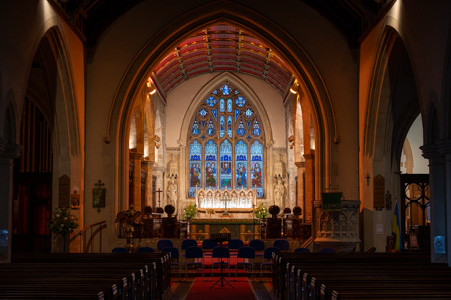
St Oswald, Oswestry
1. Iron Age Britain (800 BC to 43 AD)
The beginnings of Christianity...but not in Britain...
Iron Age Britain was characterised by a polytheistic religion (i.e. belief in or worship of more than one god) with a strong connection to the natural world, those who practiced polytheistic or non-Christian religions were referred to as pagans by the early Christians (the term originally referred to people living in rural areas, as most city dwellers had converted to Christianity, it derives from the Latin word pagus, meaning "country" or "rural district", the plural of pagus is pagi).
Pagans believed in a multitude of spirits, gods and goddesses, often associated with natural elements, and practiced rituals, including animal and human sacrifices to appease these deities. Sacred spaces included lakes, rivers, hills, and woods, and the moon, sun, and stars were also significant. They also believed that the gods could influence natural disasters, invasions, and other events.
Green Man
Although originally a pagan symbol, the Green Man was regarded by early Christians as representing the energy of life reborn in Christ and was adopted by the early Church to symbolise Easter and the Resurrection. Also, medieval legend has the Tree of Life growing from seeds planted in Adam’s mouth. Hence, the Green Man is commonly found in churches.

St Edith, Eaton-under-Heywood
Yew Trees
Yew trees have been a feature of churchyards ever since the beginning of Christianity, as they were adopted from existing pagan sites, some still existing trees even pre-date Christianity. The trees symbolise immortality and resurrection, but they also had practical uses as they protected the land from livestock due to their poisonous nature and provided wood for bows.
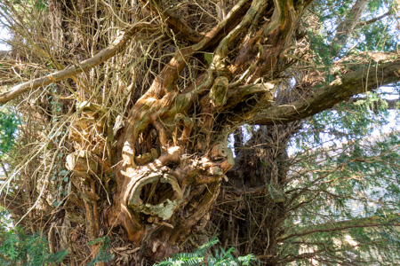
All Saints, Norbury
The Cornovii
Shropshire was occupied by the Cornovii tribe of Celtic people. Their capital in pre-Roman times was probably a hillfort on the Wrekin.
The root of the Cornovii tribe's name generally means 'of the horn', signifying a peninsula, something which was relatively common with Celtic tribes which occupied peninsulas. The Midlands Cornovii clearly were not peninsula dwellers though. The origin of their name is more obscure, perhaps referring to a god, the 'Horned One', Cernunnos. The root is 'corn', meaning 'horn', just as it is for the peninsula-dwelling Cornovii. Despite the Anglo-Saxon conquest, the deity survived in legend as Herne the Hunter.
The history of Christianity begins with the Ministry of Jesus...
Jesus was a Jewish teacher and healer who was crucified and died in circa AD 30-33 in Jerusalem (in the Roman province of Judea). Afterwards, his followers (a set of apocalyptic Jews) proclaimed him risen from the dead and believed he was the prophesised Messiah, the Son of God, the Christ (a title in Greek for the Hebrew term Messiah), thus Christianity began as a Jewish sect, diverging gradually from Judaism over doctrinal, social and historical differences.
After the death of Jesus, his followers established Christian groups in cities, such as Jerusalem; the movement then quickly spread to other major cities including Alexandria, Damascus and Antioch. Early Christians referred to themselves as brethren, disciples or saints, but it was in Antioch, according to Acts 11:26, that they were first called Christians (Greek: Christianoi).
Christianity first appeared in Rome most likely in the mid-1st Century AD.
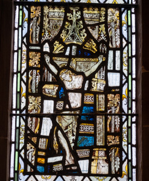
St Gregory, Morville
The Gospels
The Gospels were written Matthew (winged man), Mark (winged lion), Luke (winged ox) and John (eagle) shortly after Jesus' death.

St Gregory, Morville
2. Roman Britain (43 AD to 410 AD)
Christianity spreads throughout the Roman Empire and reaches Britain...it becomes the official religion of the Roman Empire and starts to organise around dioceses...the Nicene Creed is written...the role of the Bishop is created and Rome becomes the Papacy...
Roman Britain was religiously diverse, with followers of the native Celtic religion, Roman religion, and imported eastern religions. People typically believed in a wide range of gods and goddesses. They worshipped several of them, likely selecting some local and tribal deities and some of the major divinities venerated across the Empire.
These separate religious traditions developed into a hybrid Romano-Celtic religion through cultural mixing. There is no direct evidence that Judaism was practised in Roman Britain.
Romano-British temples were sometimes erected at older, pre-Roman cultic sites. A new style of Romano-Celtic temple developed that was influenced by both Iron Age and imperial Roman architectural styles. Buildings in this style remained in use until the 4th Century.
Viroconium
Viroconium was founded in the mid 1st-Century AD as a legionary fortress, and the city was established in the 90s AD.

Viroconium and the Wrekin
Arrival of Christianity in Roman Britain
It is not known precisely when Christianity arrived in Roman Britain - in the 2nd and 3rd Centuries AD there was a constant influx of people from across the Empire, some of whom were likely Christian. It has been suggested that Christianity was perhaps introduced to Britain in the latter part of the 2nd Century. Christianity had reached Roman Britain by the 3rd Century of the Christian era as the first recorded martyrs in Britain were St. Alban of Verulamium (who is traditionally believed to have been beheaded sometime during the 3rd or 4th Century) and Julius and Aaron of Caerleon (who were martyred in the 3rd Century).
St Alban
St Alban is venerated as the first-recorded British Christian martyr sometime during the 3rd or 4th Century.
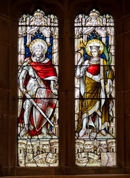
Window at St Gregory, Morville, showing St Alban
Around 200 AD, the Carthaginian theologian Tertullian included Britain in a list of places reached by Christianity in his work, Adversus Judaeos. His contemporary, the Greek theologian Origen also wrote that Christianity had reached Britain.
Growth of Christianity in the Roman Empire
During the 3rd Century Christianity grew slowly but steadily in the Roman Empire, the number of Christians in Britain was probably small, and it is unlikely there was any extensive church organisation before the 4th Century. This was in part due to the persecutions of the Christians led by the Roman Emperors at the time.
In 260 AD, the Emperor Gallienus issued an edict that decriminalised Christianity, allowing the church to own property as a corporate body.
The most severe persecution of Christians by the empire began in 303 AD under the Roman Emporer Diocletian. Nevertheless, it appears that British Christians suffered less during the Diocletianic Persecution than Christians elsewhere.
Constantine I
The Roman emperor Constantine I becomes the first Roman emperor to convert to Christianity in 312 AD.
In 313 AD, the Roman Emperor Constantine I granted official tolerance to Christianity with the Edict of Milan (the edict was an agreement to treat Christians benevolently within the Roman Empire). The Edict of Milan gave Christianity legal status and a reprieve from persecution but did not make it the state church of the Roman Empire.
Agreement on the Day for Easter
A year later in 314 AD the first council of Arles took place, this was notable as it was attended by three British bishops, indicating the presence of Christianity in Roman Britain. One of the outcomes was that Easter should be held on the same day throughout the world, rather than being set by each local church.
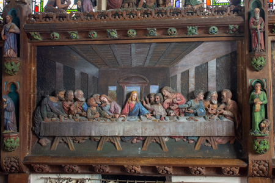
St Mary, Shawbury
Organisation by Diocese
Around this time churches began to organise themselves into dioceses which were based on the Roman civil dioceses which were usually smaller than the Roman provinces (diocese is from the Greek meaning "administration").
Wikipedia
Role of Episcopacy
Also at this time, the role of the episcopacy (bishop) is developed. The Bishop of Rome's office becomes the papacy as Rome was the capital of the Roman Empire.
Wikipedia
The First Council of Nicaea
The First Council of Nicaea was a council of Christian bishops convened in the Bithynian city of Nicaea by the Roman Emperor Constantine I. The Council of Nicaea met from May until the end of July 325 AD. The council formulated a creed, a declaration and summary of the Christian faith, although several creeds were in existence, one specific creed was created to define the Church's faith clearly, to include those who professed it, and to exclude those who did not. The creed was amended in 381 AD by the First Council of Constantinople.
There was controversy in the Christian church at this time, the Arian controversy, a dispute between two theologians from Alexandria. As a result, the Council of Ariminium was called in 359 AD by the Roman Emporer - the council ruled in favour of the Nicene Creed.
The Official Religion of the Roman Empire
Then, in the reign of Emperor Theodosius, Christianity was made the official religion of the Roman Empire. The Edict of Thessalonica, issued on 27th February AD 380 by Theodosius I, made Nicene Christianity (which uses the creed from the First Council of Nicaea) the state church of the Roman Empire.
However, in Britain, Christianity was probably still a minority religion, restricted largely to the urban centres and their hinterlands. While it did have some impact in the countryside, here it appears that indigenous late Iron Age polytheistic belief systems continued to be widely practised. Some areas, such as the Welsh Marches, the majority of Wales (excepting Gwent), Lancashire, and the south-western peninsula, are totally lacking evidence for Christianity in this period.
Viroconium
Shropshire's Roman history includes the significant settlement of Viroconium, now known as Wroxeter, which was once the fourth largest city in Roman Britain. While the Romans didn't officially introduce Christianity, an early Christian community may have survived at Wroxeter after the Roman period, potentially leading to the later village. The Church of St. Andrew at Wroxeter, built on the Roman site, contains Roman materials and may have roots in this early Christian community.
3. Early Medieval Britain / Dark Ages / Anglo-Saxon Britain (410 AD to 1066 AD)
The kingdom of Mercia is established in the 6th Century AD...the Gregorian mission arrives in Britain in the same Century, but Mercia is Christianised later than the other Anglo-Saxon kingdoms...the dioceses of Lichfield and Hereford are established...
The period immediately after the decline of Roman Britain (410 AD to c. 449 AD) is referred to as sub-Roman Britain or the Dark Ages. The Anglo-Saxons migrated to Britain from mainland north-western Europe after the Roman Empire withdrawal from Britain at the beginning of the 5th century. The Anglo-Saxons then established seven kingdoms, known as the Heptarchy, in the 5th and 6th Centuries. The Anglo-Saxon kingdoms were united in 927 AD by King AEthelstan to form the Kingdom of England.
Those Britons who found themselves in the areas dominated by the Anglo-Saxons possibly embraced the Anglo-Saxons' pagan religion (teutonic heathanism) in order to aid their own self-advancement, just as they adopted other trappings of Anglo-Saxon culture. The Anglo-Saxons' religion worshipped Germanic gods like Odin, Thor, and Freyja. Anglo-Saxon paganism was not based on faith, but on rituals intended to bring benefits to individuals and the community.
Celtic Christianity
It is not entirely clear how many Britons would have been Christian when the pagan Anglo-Saxons arrived. But during this period, Christianisation intensified and evolved into Celtic Christianity after the Romans left Britain, this is because Wales, Scotland and Ireland were not taken over by the Anglo-Saxons and these areas would have seen an influx of native Britons (migrating away from the Anglo-Saxon occupied areas).
Celtic Christianity was the form of Christianity that developed between the 5th and 11th Centuries and deviated from Roman Catholic practices having a strong emphasis on monasticism and nature. While not a single, unified church, it was influenced by indigenous Celtic customs and led to practices like the development of local saints, the use of personal penance, and emphasis on monastic communities rather than bishoprics.
Christianity in Ireland
The development of Christianity was most prevalent in Ireland. There had been attempts to evangelise the Irish by Pope Celestine I in 431. However, it was St Patrick who is credited with converting the Irish en-masse.
A Christian Ireland then set about evangelising the rest of the British Isles, and Columba (an Irish abbot and missionary evangelist credited with spreading Christianity in what is today Scotland) was sent to found a religious community in Iona, off the west coast of Scotland. Then Aidan (an Irish monk and missionary credited with converting the Anglo-Saxons to Christianity in Northumbria) was sent from Iona to set up his see in Northumbria, at Lindisfarne, between 635 and 651.
Mercia
Mercia, meaning "kingdom of the border people" was one of the significant kingdoms of Anglo-Saxon Britain, it covered what is today central England.
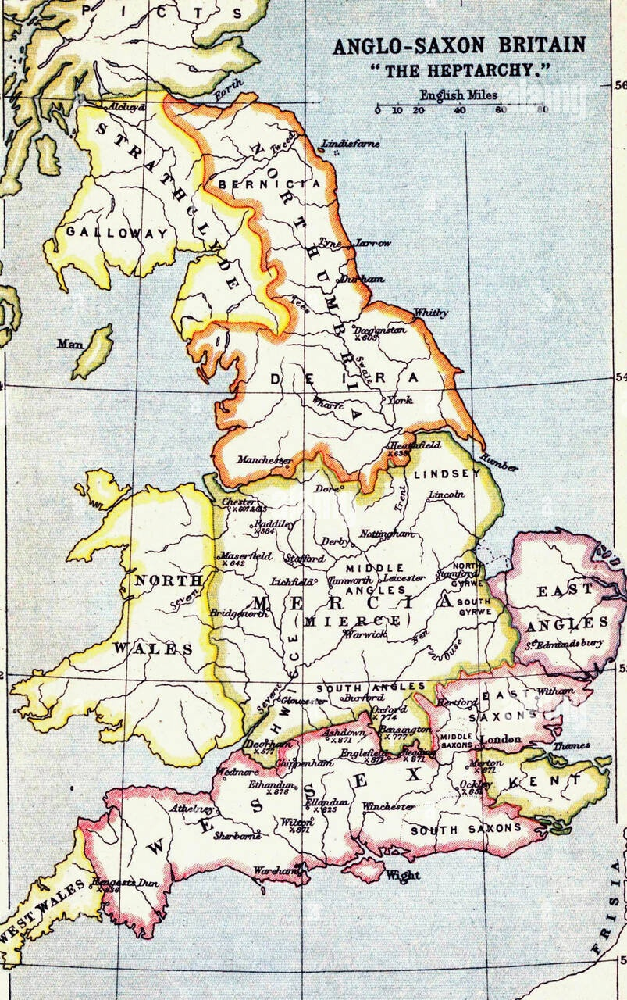
Wreocensæte
The Wreocensæte, sometimes anglicized as the Wrekinsets, were one of the peoples of Anglo-Saxon Britain. Their name approximates to "Wrekin-dwellers". The boundaries of the kingdom are uncertain, but it was substantial as the Tribal Hidage lists it as 7000 hides. The evidence suggests that the Wrekinset were the most northerly of the three large Mercian subject kingdoms facing Wales, with the Magonsæte to their south.
Magonsæte
Magonsæte was a minor sub-kingdom of the greater Anglo-Saxon kingdom of Mercia, thought to be coterminous with the Diocese of Hereford.
596 AD: The Gregorian Mission
It was the Gregorian Mission in 596 AD that sought to convert the pagan Anglo-Saxons to Christianity.
The Gregorian mission, or Augustinian mission, was a Christian mission sent by Pope Gregory the Great in 596 to convert Britain's Anglo-Saxons. The mission was headed by Augustine of Canterbury. By the time of the death of the last missionary in 653, the mission had established Christianity among the southern Anglo-Saxons.
In the early part of the 7th Century, Christianity also spread to Northumbria, but it was the new king, Oswald (who reigned from 634 to 641/642), who did most to convert Northumbria to Christianity when he invited missionaries from the Irish monastery of Iona, who then worked to convert the kingdom.

Window at St Gregory, Morville, showing St Augustine and St Gregory
599 AD: Clive and St Augustine
Circumstantial evidence, including historical records of early Christian sites, indicates that St. Augustine found "a little wooden church" when visiting the village of Clive in 599 AD, establishing it as one of the earliest Christian sites in Shropshire. While the exact origins are obscure, the site has been associated with early missionary work.
Clive Parish Council
Shrewsbury
Shrewsbury originated in the 7th Century as an Anglo-Saxon settlement called "Scrobbesbyrig" and was first recorded in 901.
653 AD: Peada King of the Middle Angles
In circa 653, Peada was made king of the Middle Angles by his father Penda (Penda was king of Mercia, the Middles Angles were an important ethnic or cultural sub-kingdom within the larger kingdom Mercia). Peada then sought to marry Ealhflaed of Bernicia (the daughter of King Oswiu of Northumbria) - Oswiu made this conditional of Peada's baptism and conversion to Christianity (at the time Penda, Peada and the Middle Angles along with many other parts of Mercia were all pagan).
Peada was baptised by Finan of Lindisfarne, and this was followed by a campaign to convert Peada's people. Four priests were instructed to return with Peada and baptise his nation - Cedd, Atta, Betti and Diuma - the mission arrived in 653, the priests were to introduce the Christian faith to the region.
Peada was baptised at Repton (which is now in Derbyshire). A double abbey (a community of both monks and nuns) under an abbess was established.
Oswiu defeated and killed Penda (Peada's father and King of Mercia) on 15th Nov 655 at the Battle of Winwaed, and consequently had power in Mercia - he allowed Peada to rule the southern part of Mercia. However, Peada was murdered in 656 by his own wife whilst celebrating Easter, and so Mercia was under the control of the Northumbrian king Oswiu.
655 AD: (15th November) Penda is Killed in Battle
Penda was King of Mercia and the last great pagan warrior-king among the Anglo-Saxons. At the time of his rule Christianity was establishing itself in the other Anglo-Saxon kingdoms, but Penda held onto his Pagan beliefs. Bede wrote that Penda tolerated the preaching of Christianity in Mercia itself, despite his own beliefs.
Following Penda's death, his son Peada became king under the overlordship of Oswiu of Northumbria, this then paved the way for the Christianisation of Mercia (the last kingdom to convert).
Peada was killed six months after becoming king - it wouldn't be until 658 AD that the Mercian nobles successfully drove out Oswiu's (of Northumbria) governors, allowing Mercia to have its own king again (Wulfhere).
655 AD (after, perhaps 658?): Diuma is Consecrated as the first Bishop of Mercia and the Diocese of Mercia is Founded
Diuma was appointed by Oswiu (King of Northumbria), as the first Bishop of Mercia following the death of Penda. He was consecrated by Finan, and it is assumed that he established his see in Repton (but the exact boundaries of the bishopric are unclear). Bede claimed that he was bishop of both the Middle Angles and the Mercians.
Thus the diocese of Mercia is founded with Diuma as its first bishop.
He was an Irishman (one of the four priests Cedd, Atta, Betti and Diuma), from the Kingdom of Northumbria, who accompanied the newly baptised Peada, son of Penda (King of Mercia) back to Mercia in 653.
Finan of Lindisfarne
Finan of Lindisfarne, also known as Saint Finan, was an Irish monk, trained at "Iona Abbey" in Scotland, who became the second bishop of Lindisfarne from 651 until 661.
658 AD to 675 AD: Wulfhere of Mercia
Wulfhere was King of Mercia for this period. He was the first Christian king for the whole of Mercia. However, it is not known when or how he converted from Anglo-Saxon paganism. It has been suggested that he adopted Christianity as part of a settlement with Oswiu. Peada brought a Christian mission into Mercia, and it is possible that this was when Wulfhere became a Christian.
Wulfhere's marriage to Eormenhild of Kent (no date recorded) would have brought Mercia into close contact with the Christian kingdoms of Kent and Merovingian Gaul, which were connected by kinship and trade. The political and economic benefits of the marriage may therefore also have been a factor in Wulfhere's Christianisation of his kingdom.
Subsequent Kings of Mercia were also Christian (Wulfhere's immediate two successors even becoming monks in later life), and made grants of land to the church.
664 AD: Synod of Whitby
In 7th Century Britain there were several differences between Roman and Celtic Christianity (e.g. the calculation of the date for Easter). The Synod of Whitby was convened resolve these differences, it established the Roman practices as the norm in Northumbria, and thus brought the Northumbrian church into the mainstream of Roman culture.
669 AD: Chad becomes Bishop of Mercia

St Chad, Shrewsbury
669 AD: Seat of Diocese Moved to Lichfield
Wulfhere continued to base his rule over the Middle Angles with the royal centre at Tamworth. In 669, after the death of Jaruman (the fourth Bishop of Mercia), he requested that the archbishop of Canterbury send a new Bishop. This was Chad (brother of Cedd).
The ecclesiastical centre for the entire vast region was established in Middle Angle territory, as Wulfhere donated land a short distance away from Tamworth, at Lichfield, to allow Chad to establish a monastery. And so, in 669 the Bishop of Mercia translated his see from Repton to Lichfield, St Chad was the first Bishop of Lichfield.
Bede, the historian, first documented Lichfield in his Ecclesiastical History of the English People, describing the establishment of St. Chad's episcopal see there in 669, making it the ecclesiastical centre of the powerful Kingdom of Mercia. Bede's detailed account of St. Chad's appointment and the founding of the religious community established Lichfield's significance and established a religious heritage that continues to shape the city's identity and culture today.
Lichfield Cathedral
The Norman cathedral was built starting in 1085, but the current Gothic structure was constructed between the 1190s and the 1360s, with work paused by the Black Death. The cathedral is known as the UK's only medieval three-spired cathedra.

Lichfield Cathedral
Diocese of Lichfield
The first diocese in the kingdom of Mercia was founded in 655 as the Diocese of Mercia being renamed Diocese of Lichfield in 669. The following dioceses were then created from it Hereford (676), Lincoln (678), Leicester (680) and Worcester (680) as Lichfield was considered too vast for a single bishop to effectively rule.
From 787 to 799 it became the seat of an archbishop given authority over the dioceses of Worcester, Leicester, Lincoln, Hereford, Elmham and Dunwich.
The diocese was moved and renamed Chester in 1075 followed by Coventry in 1102. In 1228 it was renamed once more to Coventry and Lichfield then reversed to Lichfield and Coventry in 1539. In 1837 Coventry was transferred to the Diocese of Worcester.
Web Site
676 AD: Diocese of Hereford
The Diocese of Hereford is created, it is based on the Mercian sub-kingdom of Magonsaete. This was done because the diocese of Lichfield (Mercia) was considered too vast for one bishop to rule.
Putta was the first Bishop of Hereford.
Hereford Cathedral
The cathedral has a history stretching back to around 676 AD, beginning with a Saxon-era building that was later rebuilt in Norman style after being burnt down in 1056. The current structure, built from around 1079, blends Norman and Gothic styles and houses significant artifacts like the Mappa Mundi and a chained library.

Hereford Cathedral
680 AD: Wimnicas Monastery
Merewalh, subking of Magonsaete, founded the first monastery at Wenlock between 670 and 680.
Called Wimnicas, it was a ‘dual house’ – a community of both monks and nuns. Double monasteries of this type originated in France, and were not uncommon between the 7th and 9th Centuries. At the head was an abbess, almost always of royal birth. Wenlock’s first abbess was an experienced Frankish abbess called Liobsynde, best known is Wenlock’s second abbess who was Milburga, an Anglo-Saxon princess and the daughter of Merewalh.
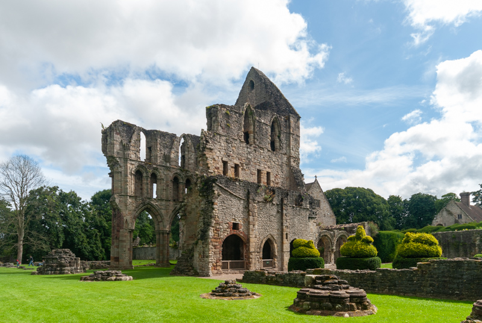
Much Wenlock Priory
English Heritage
7th Century AD: St Chad’s Church
Old St Chad's is founded. ==(Check date?)== It is known that by the reign of King Offa of Mercia (757-96 AD) there was a monastic college on the site.
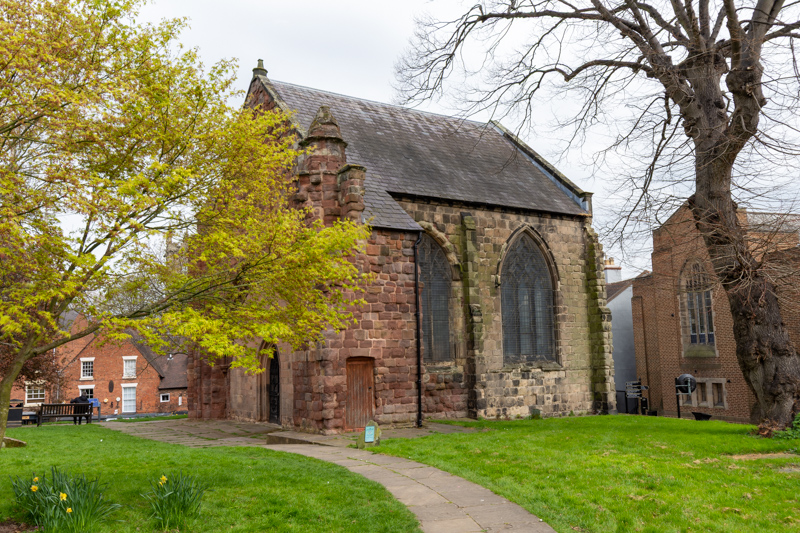
St Chad, Shrewsbury
731 AD: Bede completes Ecclesiastical History of the English People
The Ecclesiastical History of the English People (Latin: Historia ecclesiastica gentis Anglorum), written by Bede in about AD 731, is a history of the Christian Churches in England, and of England generally.
Bede apparently had no informant at any of the main Mercian religious houses. His information about Mercia came from Lastingham, now in North Yorkshire, and from Lindsey, a province on the borders of Northumbria and Mercia. As a result, there are noticeable gaps in his coverage of Mercian church history, such as his omission of the division of the huge Mercian diocese by Theodore (Archbishop of Canterbury) in the late 7th century.
757 AD to 796 AD: Offa of Mercia
Offa, King of Mercia, seemed to resent his own bishops paying allegiance to the Archbishop of Canterbury in Kent who, while under Offa's control, was not of his own kingdom of Mercia. (In 764, Offa had gained supremacy over Kent and ruled it through client kings. By the early 770s, it appears that Offa was attempting to rule Kent directly.)
Offa therefore created his own archbishopric in Lichfield, who presided over all the bishops from the Humber to the Thames, in 786, with the consent of Pope Adrian I. Lichfield was therefore briefly the seat of an archbishop (Hygeberht) from 787 to 799 (officially dissolved in 803) during the ascendancy of the kingdom of Mercia. Thus the archdiocese of Lichfield became a third archdiocese of the English church, the other two being Canterbury and York. The Archbishopric of Lichfield only lasted for 16 years, ending after Offa's death, when at the Fifth Council of Clovesho its dioceses were restored to Æthelhard, Archbishop of Canterbury by Pope Leo III.
Historia Brittonum
828-829 AD
Viking invasion of England
The Vikings who invaded Britain in 865 AD were also pagan, but they were accepting of Christianity as conversion to the religion of the British people was seen as a way to better integrate.
Anglo-Saxon Chronicle
In the late 9th Century AD - the Anglo-Saxon Chronicle is created, it is a collection of annals in Old English, chronicling the history of the Anglo-Saxons. The original manuscript of the Chronicle was created late in the ninth century, probably in Wessex, during the reign of Alfred the Great (871–899). Its content is known as the "Common Stock" of the Chronicle. Multiple copies were made of that one original and then distributed to monasteries across England, where they were updated, partly independently. These manuscripts collectively are known as the Anglo-Saxon Chronicle. Almost all of the material in the Chronicle is in the form of annals, by year; the earliest is dated at 60 BC (the annals' date for Caesar's invasions of Britain). In one case, the Chronicle was still being actively updated in 1154.
9th or 10th Century AD: Preaching Crosses
Stone crosses were erected widely across the British Isles to reinforce the Christian faith, with many early examples originating during the 9th to 10th centuries. These often acted as early Christian markers in the absence of a church building.

St Peter, Coreley

St Mary, Bitterley
10th Century AD: The Lichfield Gospels
The Lichfield Gospels (also known as the St Chad Gospels, the Book of Chad, the Llandeilo Gospels, the St Teilo Gospels and variations of these) comes into the possession of Lichfield Cathedral.
Shrewsbury's first Mention
The earliest written mention of Shrewsbury existing is from the year 901 AD, when it was described as being a city (‘in civitate Scrobensis’)
912 AD: St Alkmund’s Church
St Alkmund's church is founded by Aethelfleda, Lady of the Mercians and daughter of Alfred the Great. By the time of Domesday survey, the church was substantially endowed. However, when Lilleshall Abbey was established in 1148 AD, the church became a poor vicarage as property was transferred to Lilleshall. The 10th Century building no longer survives, the present building dates from 1475 AD (tower and spire) and 1794-5 AD.

St Alkmund, Shrewsbury
Kingdom of England
In 927 AD King Æthelstan completes the unification of the various Anglo-Saxon and Viking kingdoms, becoming the first true King of England
970 AD: St Mary’s Church
Thought to be one of the oldest extant churches in Shropshire, St Mary’s in Shrewsbury is founded in 970 by King Edgar (there is belief that an earlier church existed on the site). The church was a Royal Peculiar, under the jurisdiction of the king rather than the diocese.
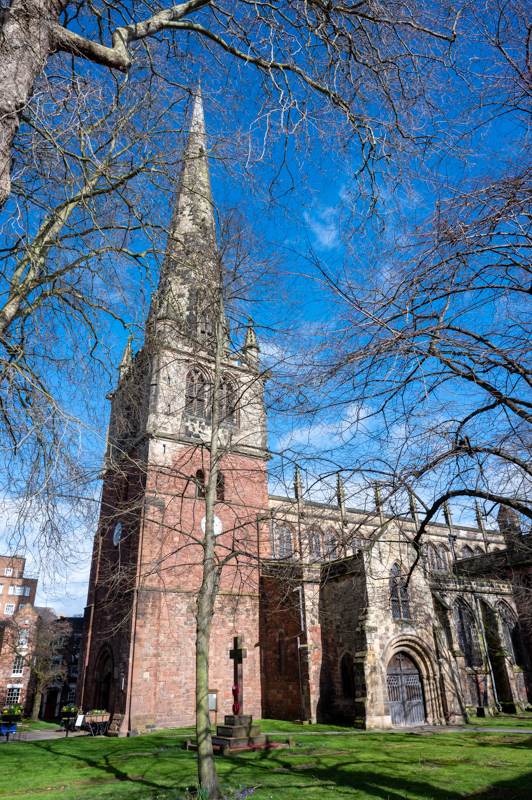
St Mary, Shrewsbury
The Millennium
There was a widespread belief that the world would end in the year 1000 AD, this comes from various religious prophecies, particularly Christian interpretations of Revelation's "Millennium" (the Book of Revelation also known as the Book of the Apocalypse is the last book of the New Testament), a symbolic or literal thousand-year reign of Christ, followed by judgment and a new creation, but not necessarily an immediate end.
Wikipedia
Shropshire's first Mention
The first mention of "Shropshire" in the Anglo-Saxon Chronicle occurs under 1006 - this is when the King crossed the Thames and wintered in the area of Shropshire - Scrobbesbyrigscir (shire with Shrewsbury as its head).
(before) 1061 AD: Bromfield Priory
Bromfield Priory was a college of secular canons, founded sometime before 1061.

St Mary the Virgin, Bromfield
Anglo-Saxon Church Building
Early Anglo-Saxon buildings in Britain were generally simple, constructed mainly using timber with thatch for roofing. The use of stone for church construction by the Anglo-Saxons was unusual before c. 950 AD; stone was used for cathedrals and monasteries, however. Thus many Anglo-Saxon churches were made of wood and so no longer survive; they were generally replaced with stone constructions after the Norman conquest of Britain.
However, some places of worship were built in stone, these were often 'minster' - or monastic - churches that have over time become parish churches. Anglo-Saxon churches had a simple plan comprising a rectangular nave adjoining a rectangular chancel.
The Anglo-Saxons were not great stonemasons, they applied the same techniques used for wood construction to stone. For example, Anglo-Saxon windows are very distinctive, a triangular-headed one is likely to be Anglo-Saxon work (it is thought that the design worked well in wood, so the masons were in effect using planks of stone). Other windows have round heads and can often be distinguished from Norman windows by disproportionately large surrounding stones. Or they may have crude little turned pillars or 'balusters' (1) either side.
Anglo-Saxon churches are characterised by:
- semi-circular arches over doors and windows or triangular-headed doorways and windows
- tall and narrow doorways
- windows that have small external openings but are deeply splayed through to the inside
- walls that are no more than 90cm thick
- strip-work on wall surfaces
- herringbone style stonework can be found in the late Saxon/early Norman buildings
- long-and-short quoins (2) (large, tall upright stones alternating with broad flat stones)
Christian churches have been present in Shropshire since the Anglo-Saxon era, an unknown number were built during this time. Very few surviving churches have retained Saxon features, the best example being St Giles, Barrow - founded on the estates of one of England's earliest monasteries, Wenlock Abbey (later Priory), probably in the 8th Century it was used as a small stone oratory, or 'cell', for solitary prayer.
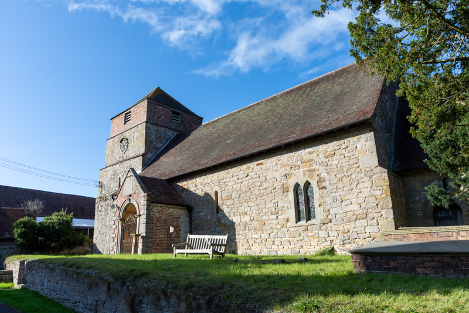
The earliest parts of St Andrew, Wroxeter, are Anglo-Saxon but the precise date of its foundation is uncertain (thought to be 5th or 6th Century - the north wall has been dated to the 7th or 8th century).

Another example of a church from this period is St Peter, Diddlebury - it is one of about 20 churches in Shropshire mentioned in the Domesday book and therefore of known Saxon origin.
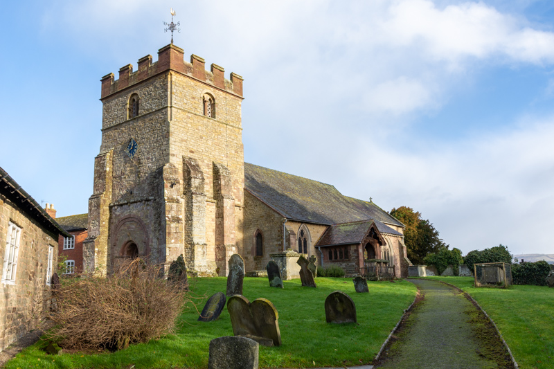
Finally, St Peter, Stanton Lacy is another example of a church built prior to the Norman conquest of Britain.

1: The term ‘baluster shaft’ is given to the shaft dividing a window in Anglo-Saxon architecture.
2: A quoin is both the external angle or corner of a building and, more often, one of the stones used to form that angle. These cornerstones are both decorative and structural, since they usually differ in jointing, colour, texture, or size from the masonry of the adjoining walls.
4. Medieval Britain - Norman Britain (1066 AD to 1154 AD)
Following the Norman invasion of 1066 AD, the church is reformed and reorganised to bring it into line with the continental Christian church…many abbeys and priories are established…tensions between the king and the pope prevailed…
William I 1066-1087
William I had good relations with Pope Alexander (1061-1073). Alexander had given William the Papal banner to take to Hastings, plus they both wanted to reform the corrupt English church and bring it in line with Europe. William also agreed to get rid of Simony and enforce celibacy, however his main aim was to remove corrupt Anglo-Saxon bishops. Alexander ordered William to do penance for all the lives lost at Hastings; in return William built Battle Abbey, which was finished in 1095. William’s relations with Pope Gregory VII (1073-1085) were not so good. Firstly, Gregory thought the church had more authority than kings – William did not agree. Gregory wanted all English bishops to travel regularly to Rome to report to him; he wanted direct control over discipline and teachings; he also demanded William swear fealty to him, but William refused. However, William did agree to the ‘Peter’s Pence’ where 1 penny from every house was given to the Pope.
William II 1087-1100
The poor relations with Pope Gregory continued under William II. In 1078 Gregory banned kings from appointing bishops and abbots. However, relations improved slightly when Pope Urban II (1088-1099) agreed not to interfere in English appointments, but their relationship overall remained hostile. William II was not a religious man and his morality was an issue, he also had no interest in continuing church reforms. William II used taxes to take money from religious houses and used religious positions to reward and promote people.
Henry I 1100-1135
Henry I had a better relationship with the papacy than William II. Henry promised to end William II’s policy of gaining money from the church. However, the Investiture Controversy increased tensions significantly. When bishops were consecrated, they were given the ring and staff by the king. This practice implied the bishop depended on the king for their spiritual power rather than the Pope; the church did not agree with this. In 1103, Archbishop Anselm refused to pay homage to Henry I and so he was exiled. Pope Urban threatened Henry with excommunication until finally an agreement was reached in 1107 that the bishops could pay homage to the king before they were consecrated.
Stephen 1135-1154
King Stephen's relationship with the Church was complex and crucial to his reign, initially requiring him to seek and secure ecclesiastical support to gain the throne, as shown in his "Charter of Liberties". However, the relationship deteriorated, culminating in the arrest of bishops in 1139, which significantly weakened his position and was a major factor in losing the support of the church and paving the way for Empress Matilda's invasion.
The main effect of the Norman Invasion of Britain was to reform and bring the church in England in line with the church on the Continent (the church had deteriorated and become corrupt due to lack of leadership in Anglo-Saxon England), but to do so under the leadership of the King. At the time of the Norman Invasion of Britain, the Archbishop of Canterbury was Stigand whose elevation to Archbishop had not been recognised by the papacy; his controversial position (pluralism with Winchester) influenced Pope Alexander II's support of William's invasion of England. William of Normandy was a devout and a loyal follower of the Pope, and had been responsible for building many new monasteries in Normandy.
Wikipedia - William the Conqueror
Wikipedia - Stigand
At this time, papal power was increasing across the Continent, with many reforms taking place in Europe, but William refused to become subservient to the Pope and resisted attempts by the papacy to interfere with his initiative in England to build a better Church. After the invasion, King William I, although not head of the church, was always involved in decisions about appointments of church leaders (as the church had much power and land, it was essential to William's success to tap into this power and wealth).
Reorganisation and Reform
In 1070, the Pope, Alexander II, sent an ambassador to England to carry out the second coronation of King William I, after he had successfully overcome the rebellious north of England. The Pope’s men crowned William at Easter, and then they deposed Stigand from his position as Archbishop of Canterbury. A few weeks later, at Whitsun, a Church council meeting appointed Lanfranc (abbot at Caen) as Archbishop of Canterbury.
Wikipedia - Lanfranc
Following his appointment, Lanfranc set about a programme of reorganisation and reform within the church. This included replacing existing Anglo-Saxon Bishops with Norman Bishops, prohibiting simony, the separation of Christian courts from civil courts, the appointment of archdeacons, and the removal of some smaller sees. The Normans were enthusiastic builders and quickly replaced many Anglo-Saxon churches with their own designs. By the time of King William I's death, the Church of England was much stronger and more efficient than it had been under the Anglo-Saxons.
Monastic Enthusiasm
Most monastic communities were developed in the wave of monastic enthusiasm that swept western Christendom in the 11th and 12th Centuries. Typically, 11th and 12th Century founders endowed monastic houses with revenue from landed estates and tithes appropriated from parish churches under the founder's patronage.
200 more houses of friars in England and Wales constituted a second distinct wave of monastic zeal in the 13th century. Friaries, for the most part, were concentrated in urban areas. Unlike monasteries, friaries had no income-bearing endowments; the friars, as mendicants, were supported financially by donations from the faithful, while ideally being self-sufficient and raising extensive urban kitchen gardens.
Monastic Houses in Shropshire
Alberbury Priory
Bridgnorth Greyfriars, Franciscan Friars, 1244-1538
Bromfield Priory
Buildwas Abbey
Chirbury Priory, Augustinian Canons, 1190-1536
Church Preen Priory, Cluniac Monks, alien house, 1150-1539
Donnington Wood Abbey, Augustinian Canons, 1144-1148
Halston Preceptory, Knights Hospitaller, 1165/1187-1540
Hatton Grange, Cistercian Monks, 1227-1540
Haughmond Abbey
Lilleshall Abbey
Lizard Abbey, Augustinian Canons, 1143-1144
Ludlow Austin Friars, Augustinian Friars, 1254-1538
Ludlow Whitefriars, Carmelite Friars, 1350-1538
Lydley Keys Preceptory, Knights Templar, 1155/60-1308/12
Morville Priory
Ratlinghope Priory, Augustinian Canons, 1200-1538
Shrewsbury Abbey
Shrewsbury Austin Friars, Augustinian Friars, 1255-1538
Shrewsbury Blackfriars, Dominican Friars, 1232-1539
Shrewsbury Greyfriars, Franciscan Friars, 1245/6-1538
Snead Priory, Augustinian Canons, 1190-1195 (transferred to Chirbury)
Stanton Long Camera, Knights Templar, 1221-1308/12
Wenlock Priory
White Ladies Priory
Wombridge Priory
Woodhouse Austin Friars, Augustinian Friars, 1250-1538
| [[List_of_monastic_houses_in_Shropshire.pdf]] | Wikipedia |
Roger de Montgomery
In circa 1071 AD Roger de Montgomery is granted estates in Shropshire and sometime after he is appointed 1st Earl of Shrewsbury.

Norman Church Building
Also known as English Romanesque architecture, the Normans were primarily responsible for introducing this style of architecture following the conquest of Britain (although the Norman style of architecture was already influencing some building in England before the conquest). The change did not happen immediately, however, and so buildings from the last 30 years of the 11th Century show Saxon and Norman influence. From 1100 AD the Saxon influence ceased to exist in buildings.
The Norman arch is the defining feature of Norman architecture. Norman arches are semi-circular. Early examples have plain, square edges; later ones are often enriched with the zig-zag and roll mouldings (3). The arches are supported on massive columns, generally plain and cylindrical, sometimes with spiral decoration; occasionally, square-section piers were used. Main doorways have a succession of receding semi-circular arches, often decorated with mouldings, typically of chevron or zig-zag design; sometimes there is a tympanum (4) at the back of the head of the arch, which may feature sculpture representing a Biblical scene.
Norman windows are mostly small and narrow, generally of a single round-headed light; but sometimes, especially in a bell tower, divided by a shaft into two lights.
The main characteristics of Norman architecture are:
- best described as powerful and masculine
- defined by semi-circular arches
- deeply recessed doorways
- thick walls
- massive round pillars
- vaulted ceilings
- ornaments such as zigzag moulding and bird and animal forms
In Shropshire, most medieval churches date from the 12th or 13th Centuries, i.e. they are Norman, Transitional (see below) or Early English Gothic (see below), then the amount of building declined from the early 14th Century. A growing population in the 12th and 13th Centuries meant that some existing churches were extended (typically, laterally by adding arcades - Norman arcades are rare but may be seen at Shawbury and Clun).
Usually churches with parochial status were two-cell (separate nave and chancel) and chapels single-cell form. But there are exceptions - single cells churches include Hadnall, Leebotwood and Lydham - two cell churches include Heath Hope Bagot and Clee St Margaret. Single cell churches hardly appear before second half of 12th Century.
Early Norman building (say until 1120) is characterised by herring bone masonry - Clee St Margaret, Culmington, Pitchford, Rushbury, Sidbury and Stanton upon Hine Heath all contain this feature.
Another sign of early Norman is use of Tufa - Quatford is a good example of this - the use of tufa declined by mid 12th Century.
Holy Trinity, Much Wenlock, the chancel and nave are Norman and the tower is Transitional.
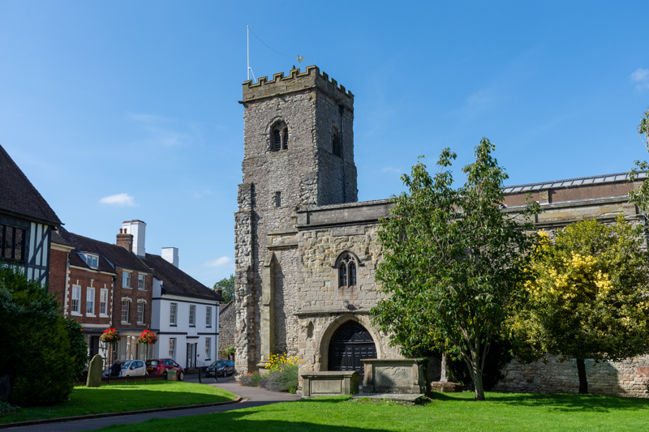
St Mary, Edstaston, is another example of a Shropshire church which dates from the Norman period and which retains many Norman features.

St Gregory, Morville, retains almost all of its Norman features.
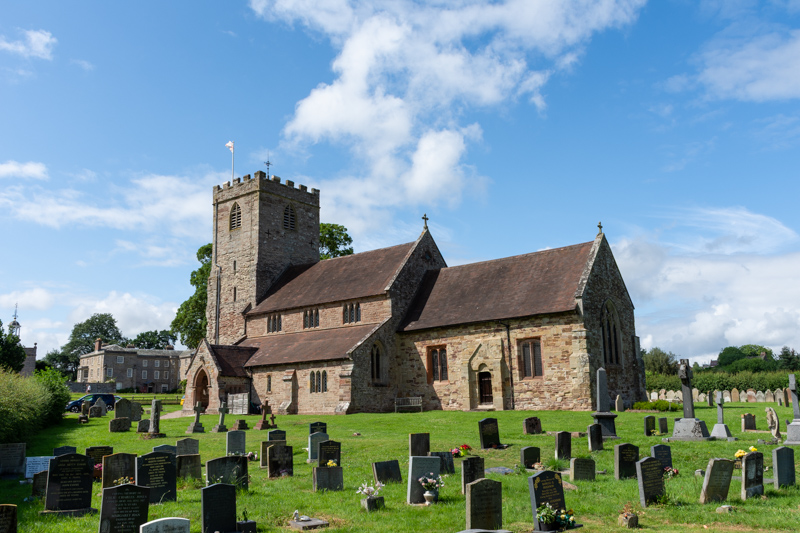
3: A molding, also spelled moulding, in architecture and the decorative arts, is a defining, transitional, or terminal element that contours or outlines the edges and surfaces on a projection or cavity, such as a cornice, architrave, capital, arch, base, or jamb.
4: A tympanum, plural tympana, in Classical architecture, is the area enclosed by a pediment (5), whether triangular or segmental. In a triangular pediment, the area is defined by the horizontal cornice along the bottom and by the raking (sloping) cornice along the sides; in a segmental pediment, the sides have segmental cornices.
5: A pediment, in architecture, is triangular gable forming the end of the roof slope over a portico (the area, with a roof supported by columns, leading to the entrance of a building); or a similar form used decoratively over a doorway or window.
1075 AD: Orderic Vitalis
Orderic Vitalis was born in Atcham and baptised in the church (along with Wroxeter, Atcham church was built with stone plundered from Viroconium). He is credited with writing the _Historia Ecclesiastica,_ a work detailing the history of Europe and the Mediterranean from the birth of Jesus Christ.

St Eata, Atcham
Wikipedia
1079 to 1082 AD: Wenlock Priory Re-founded
Roger de Montgomery re-founded Wenlock Priory, or St Milburga's Priory, as a Cluniac house (one of the first in England) between 1079 and 1082, on the site of an earlier 7th Century monastery.
1083 AD: Shrewsbury Abbey Founded
Shrewsbury Abbey was founded in 1083 as a Benedictine monastery by the Norman Earl of Shrewsbury, Roger de Montgomery. It grew to be one of the most important and influential abbeys in England, and an important centre of pilgrimage.

Founding of Quatford Church
Roger de Montgomery (the first Earl of Shrewsbury who owned most of Shropshire) established the first church (and a castle) at Quatford in 1086 AD, but it wasn't long before Bridgnorth was settled upon as a better location. De Montgomery's first wife was murdered, his second wife Adeliza de Pusey had to travel from France. While she was sailing across the English Channel, the priest on board dreamed that if Adeliza survived the journey she should vow to build a church in honour of the Blessed Mary Magdalene at the place where she would first meet her husband. This is the legend of how Quatford was chosen as the site of this church. Roger and Adeliza met in 1083 or 1084, the church was completed in 1086 and was richly endowed by de Montgomery.
The original church was completely rebuilt in the 12th Century.
The Domesday Book
1086 the Domesday Book is completed Open Domesday

Shropshire Churches in the Domesday Book
See table below - this shows the churches mentioned in the Domesday Book.
Several other locations are mentioned as having a priest.
The Domesday Book includes Aldon church which no longer exists.
The Domesday Book does not record every church that existed at the time, so other churches are likely to have been built prior to the invasion.

- Baschurch, All Saints
- Berrington, All Saints
- Bitterley, St Mary
- Burford, St Mary
- Chirbury, St Michael the Archangel
- Church Stretton, St Laurence
- Diddlebury, St Peter
- Great Ness, St Andrew
- Hodnet, St Luke
- Holdgate, Holy Trinity
- Lydbury North, St Michael and All Angels
- Maesbury, St John the Baptist
- Morville, St Gregory
- Rodington, St George
- Shawbury, St Mary
- Stanton Lacy, St Peter
- Stanton-upon-Hine Heath, St Andrew
- Stoke on Tern, St Peter
- Stottesdon, St Mary
- Wrockwardine, St Peter
- Wroxeter, St Andrew
Cressage
At the time of the Domesday Book, Cressage was known as Cristes-ache (Christ's oak) from a tradition that the gospel was first preached in this locality from beneath the shade of an oak tree (ref: Nooks and Corners of Shropshire).
Marcher Lordships
The Marcher Lordships are established in the late 11th Century.
(circa) 1100 AD: Haughmond Abbey Founded
Haughmond Abbey is founded (it was an Augustinian monastery).
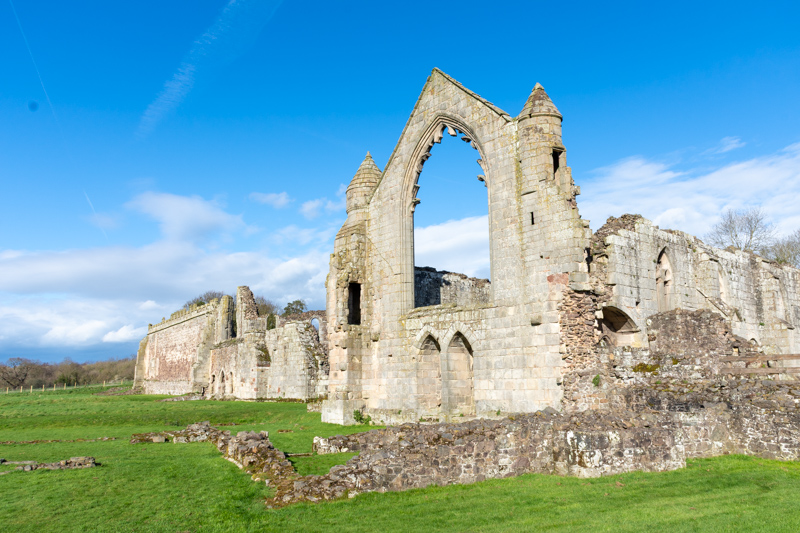
Early 12th Century AD: Wombridge Priory Founded
Wombridge Priory is founded by William of Hadley (it was a small Augustinian monastery).
12th Century AD: Stapleton
The present church was built in the 12th Century and for reasons unknown it was originally a two storey building, a possibly unique feature amongst churches. The second storey was built on top of the very thick walls of a Saxon or Early Norman church. The church was on the upper floor and the ground floor is assumed to have been an under croft (no trace now remains of the under croft (removed in 1786)).

St John the Baptist, Stapleton
1135 AD: Buildwas Abbey Founded
Buildwas Abbey (Monastery of St Mary and St Chad of Buildwas) was founded as a Savigniac monastery in 1135.
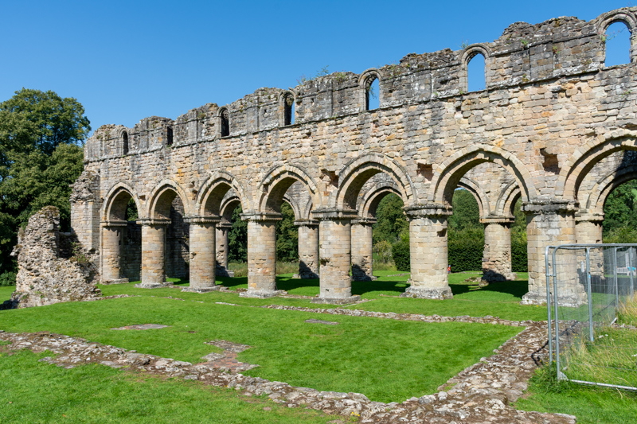
1138 AD (19th September ): St Winefride's Relics
In Shrewsbury, the abbey church was ready for consecration by 1130 but did not have any holy relics and the monks were envious of the many said to be in Wales. The monks of Shrewsbury began negotiations to obtain the relics of St Winefride for their abbey. With the consent of the Bishop of Bangor Herebert, the Abbot of Shrewsbury dispatched Prior Robert and another monk called Richard to Wales to obtain St Winefride's relics. The relics of St Winefride were finally translated to the Abbey on 19th September 1138. The shrine of Saint Winefride in Shrewsbury Abbey became a popular place of pilgrimage. The shrine of Saint Winefride at Shrewsbury was destroyed in the reformation. A fragment possibly of the shrine or of a reredos was recorded by the Rev. Blakeway in the early nineteenth century.

Saints
Some of the key saints associated with Shropshire are:
- St Chad
- St Milburga
- St Winifred
- St Eata
- St Oswald
- St Werburgh
Shrewsbury Orthodox Church
1138 AD: Morville Priory Founded
Morville Priory was a small Benedictine monastery.
The origins of the priory at Morville lie in the earlier parish church. There was a collegiate church or minster at Morville, dedicated to St Gregory and served by eight canons, in the reign of Edward the Confessor and possibly earlier.
It was not until 1138 that the church definitively became a priory.
1144 AD: Donnington Wood Abbey Founded
Donnington Wood Abbey is founded (Augustinian Canons).
1145 to 1148 AD: Lilleshall Abbey Founded
Lilleshall Abbey is founded (it was an Augustinian monastery).
1148 - Transferred from Donnington Wood Abbey (which was closed).

1150 AD: Church Preen Priory Founded
Church Preen Priory is founded (it was home to Cluniac Monks and an alien house).
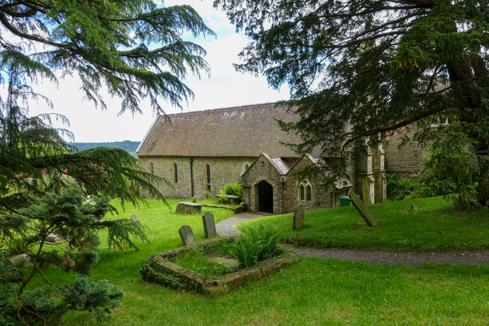
Gargoyles
Originating from the French gargouille ("throat"), these oftenfigures served both practical drainage needs and symbolic purposes, such as warding off evil spirits.

St Mary Magdalene, Hadnall
4. Medieval Britain - Plantagenents (1154 AD to 1485 AD)
The conflict between the king and pope continued…it was the age of the crusades…
Christianity was central to the Plantagenet era, with the dynasty being deeply Roman Catholic and their rule shaped by both the Church's influence and conflicts with it. Key events included the power struggle between Henry II and Thomas Becket (a conflict over the supremacy of royal authority versus the independence of the Church - Henry sought to reassert royal power over the Church), the participation of kings in the Crusades, and the annulment of the Magna Carta by the Pope, all highlighting the Church's authority.
- Henry II 1154-1189
- Richard I (the lionheart) 1189-1199
- John 1199-1216
- Henry III 1216-1272
- Edward I 1272-1307
- Edward II 1307-1327
- Edward III 1327-1377
- Richard II 1377-1399
- Henry IV 1399-1413
- Henry V 1413-1422
- Henry VI 1422-1461
- Edward IV 1461-1483
- Edward V 1483-1483
- Richard III 1483-1485
(late) 12th Century AD: White Ladies Priory
White Ladies Priory (once the Priory of St Leonard at Brewood) was founded. It was a priory of Augustinian canonesses, the name 'White Ladies' refers to the canonesses who lived there and who wore white religious habits.

1154 AD (4th December): Pope Hadrian IV
Englishman Nicholas Breakspear becomes Pope Hadrian IV, Nicholas Breakspear was a reforming monk who spent nearly his entire career on the Continent. He was elected in 1154 and took the name Hadrian IV. He remains the only Englishman ever to become pope.
Transitional (1160-1200)
The introduction of the pointed arch ushered in Gothic architecture and revolutionised church building, it was primarily for structural reasons as the arch was able to support more weight by putting more thrust to the ground and reduce the size of the supporting columns - in England this was seen about 1160-1200.
The term Transitional is used to denote the merging of one style with another, especially the 12th Century transition from Romanesque to Gothic.
St Mary, Bitterley is one of Shropshire's churches that dates from the Transitional period and St Michael, High Ercall, is another example.

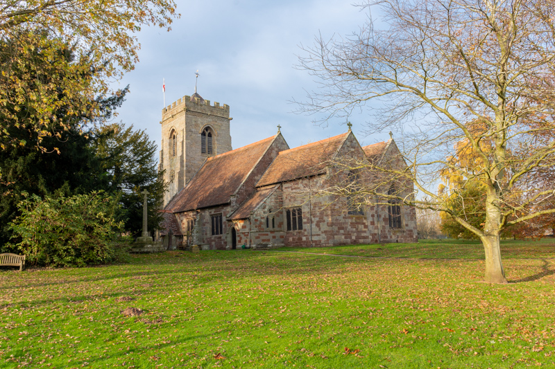
1167: Cardington Templar
Cardington village, including its church, was given in 1167 to the Knights Templar, and remained in their possession until 1308. They were responsible for starting the building of the present church in the later part of the 12th century.
1170 AD (29th December): Thomas Becket
Thomas Becket (Archbishop of Canterbury) is murdered after ongoing quarrels with King Henry II.
Third Crusade
The Third Crusade (1189–1192): Led by Richard I (Richard the Lionheart), this was the largest English effort and one of the main campaigns against Saladin after the fall of Jerusalem. While it failed to recapture the city, it resulted in a truce allowing Christian pilgrims access to Jerusalem and was successful in capturing cities like Acre and Jaffa.
Early English (c. 1200 - 1300)
The Gothic period breaks down into three periods. Taken from Thomas Rickman's influential book, An Attempt to Discriminate the Styles of English Architecture, which was first published in 1817.
The Normans had introduced the three classical orders of architecture (Doric, Ionic, and Corinthian), and created massive walls for their buildings, with thin pilaster-like buttresses. The transition from Norman to Gothic lasted from about 1145 until 1190, the style changed from the massive Norman style to the more delicate and refined Gothic. The Gothic style was also introduced from France.
The most distinctive element of this period was the pointed arch, also known as the lancet arch, which was the key feature of the rib vault (the skeleton of arches or ribs on which masonry was laid to form a ceiling or roof). The original purpose of the rib vault was to allow a heavier stone ceiling, to replace the wooden roofs of the earlier Norman churches, which frequently caught fire. Rib vaults also had the benefit of allowing the construction of higher and thinner walls. Gradually, pointed arches were used not only for rib vaults, but also for all of the arcades and for lancet windows, giving the nave its unified appearance.
The Early English rib vaults were usually quadripartite, i.e. each vault had four compartments divided by ribs, with each covering one bay of the ceiling (a vault is a structural member consisting of an arrangement of arches, usually forming a ceiling or roof). The horizontal ridge ribs intersected the summits of the cross ribs and diagonal ribs, and carried the weight outwards and downwards to pillars or columns of the triforium (6) and arcades, and, in later constructions, outside the walls to the buttresses (7).
The buttress was another important innovation introduced in this period, a stone column outside the structure that reinforced the walls against the weight pressing outward and downward from the vaults. This evolved into the flying buttress, which carried the thrust from the wall of the nave over the roof of the aisle. The buttress was given further support by a heavy stone pinnacle.
Early English architecture is also typified by lancet windows, tall narrow lights topped by a pointed arch (Early English Gothic is sometimes known as the Lancet style). They were oftren grouped together side by side under a single arch and decorated with mullions (8) in tracery (9) patterns, such as cusps, or spear-points. From lancet windows tracery was developed.
Stained glass windows began to be widely used in the windows of the clerestory, transept and especially the west facade.
Unlike the more sombre and heavy Norman churches, the Gothic churches began to have elaborate sculptural decoration. The arches of the arcades and triforium were sometimes decorated with dog tooth patterns, cusps, carved circles, and with trefoils (12), quatrefoils (13), as well as floral and vegetal designs. Simple floral motifs also often appeared on the capitals (11), the spandrels (10) and the roof bosses that joined the ribs of the vaults.
Also, instead of being massive, solid pillars, early Gothic columns were often composed of clusters of slender, detached shafts, which descended from the vaults above.
In Shropshire, most medieval churches date from the 12th or 13th Centuries.
St Mary, Acton Burnell, is considered to be the finest Early English church in Shropshire (as unlike most English parish churches it is built in the one style). At St Peter, Cound, the nave, chancel arch and south aisle are Early English.
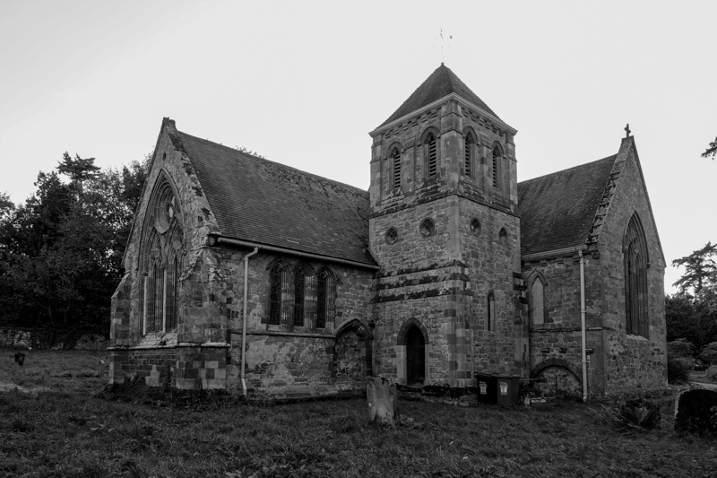

6: A triforium is an interior gallery, opening onto the tall central space of a building at an upper level. In a church, it opens onto the nave from above the side aisles; it may occur at the level of the clerestory windows, or it may be located as a separate level below the clerestory.
7: A buttress is an architectural structure built against or projecting from a wall which serves to support or reinforce the wall.
8: A mullion is a vertical element that forms a division between units of a window or screen, or is used decoratively. When dividing adjacent window units its primary purpose is a rigid support to the glazing of the window. Its secondary purpose is to provide structural support to an arch or lintel above the window opening.
9: Tracery is an architectural device by which windows (or screens, panels, and vaults) are divided into sections of various proportions by stone bars or ribs of moulding. Most commonly, it refers to the stonework elements that support the glass in a window. The term probably derives from the tracing floors on which the complex patterns of windows were laid out in late Gothic architecture. Tracery can also be found on the interior of buildings and the exterior.
10: A spandrel is a roughly triangular space, usually found in pairs, between the top of an arch and a rectangular frame; between the tops of two adjacent arches or one of the four spaces between a circle within a square. They are frequently filled with decorative elements.
11: A capital is the crowning member of a column, pier, anta, pilaster, or other columnar form, providing a structural support for the horizontal member or arch above. In the Classical styles, the capital is the architectural member that most readily distinguishes the order.
12: A trefoil (from the Latin trifolium, ‘three-leaved plant’) is a graphic form composed of the outline of three overlapping rings, used in architecture and Christian symbolism, among other areas.
13: A quatrefoil is a decorative element consisting of a symmetrical shape which forms the overall outline of four partially overlapping circles of the same diameter. It is found in art, architecture, heraldry and traditional Christian symbolism. The word ‘quatrefoil’ means ‘four leaves’, from the Latin quattuor, ‘four’, plus folium, ‘leaf’.
Wall Paintings
Church congregations were largely illiterate throughout the medieval period, and so church interiors were adorned with paintings depicting biblical stories, saints' lives, doom scenes and moral lessons intended to teach about faith, salvation and sin. Surviving examples can be found in some of Shropshire's churches, such as Upton Magna and Claverley (shown below, dated circa 1200 AD).
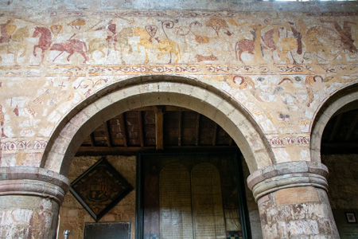
Magna Carta
In 1215 the Magna Carta is sealed by King John.
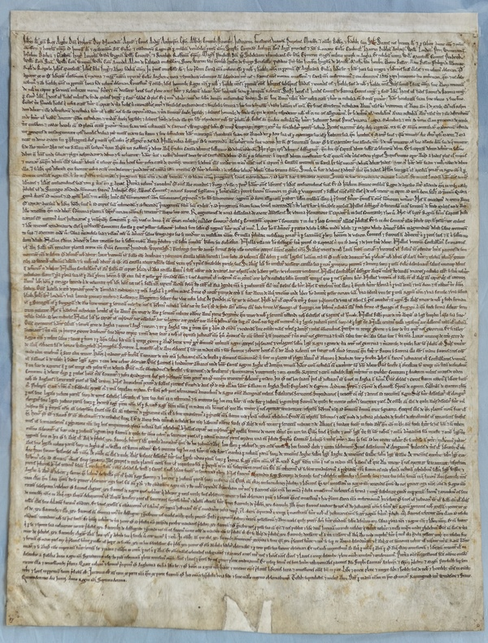
1215 AD (24th August): Magna Carta
The Magna Carta is declared null and void by Pope Innocent III - the king had sealed the charter under duress from a group of rebel barons and believed that seeking a papal annulment would free him from its obligations.
(circa) 1230 AD: Alberbury Priory Re-established
Alberbury Priory is re-established. It was one of three houses in England belonging to the French Grandmontine Order.
1236 AD: Lockable Lids on Fonts
In 1236, a decree was issued by Edmund, Archbishop of Canterbury, ordering that all church fonts (used for baptism) must have a lockable lid. The lock was to prevent the theft of Holy Water, which was believed to have magical properties. It was common for the water to be changed only once a year on Easter Sunday. This requirement often led to the creation of elaborate, artistic, and secured wooden covers for stone fonts, with many original, locked fonts still in existence in English churches.

St Andrew, Wroxeter
Parish
The word "parish" originates from the Greek word paroikia, meaning "sojourning in a foreign land" or "dwelling beside". It passed into Latin as paroecia and Old French as paroisse before appearing in English around the 13th Century to describe a local church community and its territory.
1270 AD: Bell cast for Astley
Astley church is notable as it has a bell dating from 1270, which is thought to have been cast in the churchyard by a travelling founder. The bell was rehung in 2012 after being restored. It is thought to be one of, if not the, oldest bells in the county and the diocese (Lichfield).
Dove’s Guide for Church Bell Ringers
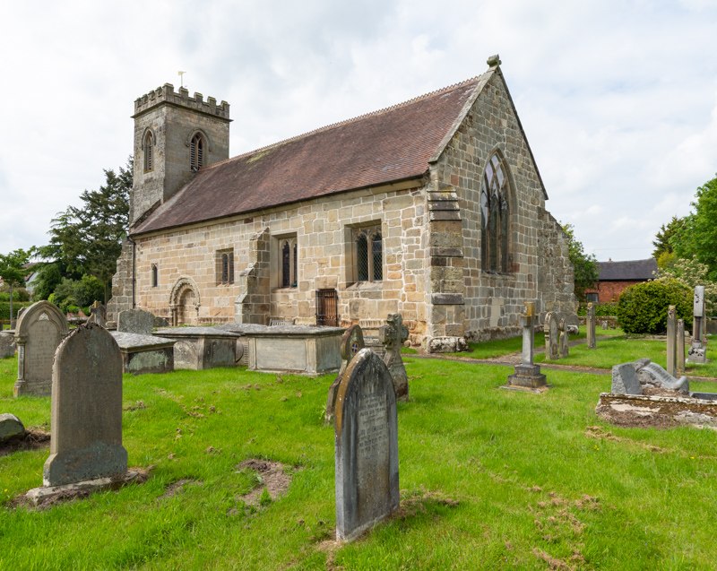
St Mary, Astley
Ninth Crusade
The Ninth Crusade (1271–1272): This was led by the future Edward I of England and was the last of the major Crusades to the Holy Land. Edward clashed with the Mamluk sultan Baibars but was ultimately forced to withdraw due to pressing domestic issues.
Jews Banned
On July 18, 1290, King Edward I issued the Edict of Expulsion, forcing the entire Jewish community (approximately 3,000 people) to leave England by November 1st. Driven by rising anti-Semitism, financial motives, and the need to secure parliamentary taxes, this decree banned Jews from the kingdom for over 365 years.
Mappa Mundi
c. 1300 the Mappa Mundi is created, it is the largest medieval map depicting the world still known to exist. The map is religious rather than a literal depiction, it features heaven, hell and the path to salvation. Titterstone Clee is the only named hill on the map.

Decorated (c. 1300 - 1350)
The second style of English Gothic architecture is generally termed Decorated Gothic, because the amount of ornament and decoration increased dramatically. It was a period of growing prosperity in England, and this was expressed in the decoration of Gothic buildings. Almost every feature of the interiors and facades was decorated.
Lierne Vaulting (14) became much more elaborate in this period. The rib vault of Early English usually had just four compartments, with a minimum number of ribs which were all connected to the columns below, and all played a role in distributing the weight and outwards and downwards. In the Decorated architecture period, additional ribs were added to the vaulted ceilings which were purely decorative. They created very elaborate star patterns and other geometric designs. An even more elaborate form - fan vaulting, appeared late in the Decorative period, unlike the lierne vault, the fan vault had no functional ribs; the visible 'ribs' are mouldings on the masonry imitating ribs. The structure is instead composed of slabs of stone joined together into half-cones.
The buttress became more common in this period, also; these are the stone columns outside the walls which supports them, allowing thinner and higher walls between the buttresses, and larger windows. The buttresses were often topped by ornamental stone pinnacles to give them greater weight.
However, Decorated architecture is particularly characterised by the elaborate tracery within the stained glass windows. The elaborate windows are subdivided by closely spaced parallel mullions (vertical bars of stone), usually up to the level at which the arched top of the window begins. The mullions then branch out and cross, intersecting to fill the top part of the window with a mesh of elaborate patterns called tracery, typically including trefoils and quatrefoils. The style was geometrical at first and curvilinear, or curving and serpentine, in the later period, this curvilinear element was introduced in the first quarter of the 14th century and lasted about fifty years.
There are relatively few Decorated or Perpendicular churches in Shropshire, as the pace of building churches slowed down during the 14th and 15th Centuries. However, many existing churches were extended during this time, in particular, many towers were are added or made taller. The nave and chancel at St Peter, Chelmarsh, are Decorated.

14: A lierne is a tertiary rib connecting one rib to another, as opposed to connecting to a springer, or to the central boss. The resulting construction is called a lierne vault or stellar vault (named after the star shape generated by connecting liernes). The term lierne comes from the French lier (to bind).
Hundred Years’ War
1337-1453
Black Death
June 1348 the Black Death reaches England. The church itself had given the cause of the Black Death to be the impropriety of the behaviour of men, the higher death rate among the clergy led the people to lose faith in the Church as an institution - it had proved as ineffectual against the horror of Y. pestis as every other medieval institution. The corruption within the Catholic priesthood also angered the English people. Many priests abandoned the terrified people. Others sought benefits from the rich families who needed burials. The dissatisfaction led to anti-clericalism and the rise of John Wycliffe, an English priest. His ideas paved a path for the Christian reformation in England.
Wikipedia
Perpendicular (1350-1550)
The Perpendicular style emerged in the mid-14th Century, it is characterised by an emphasis on vertical lines. The intricate shapes of the Decorated style gave way to more regular and rectangular shapes.
Walls were built much higher than in earlier periods. Windows became very large, sometimes of immense size, with slimmer stone mullions than in earlier periods, allowing greater scope for stained glass craftsmen. The mullions of the windows are carried vertically up into the arch moulding of the windows, and the upper portion is subdivided by additional mullions (supermullions) and transoms (15), forming rectangular compartments, known as panel tracery.
The interiors of Perpendicular churches were filled with lavish ornamental woodwork, including misericords, under which were grotesque carvings; stylized 'poppy heads'; and elaborate multicoloured decoration, usually in floral patterns, on panels or cornices (brattishing (16)). Tracery designs were replaced by more geometric forms and perpendicular lines.
The Black Death affected the Perpendicular style as arts and culture, took a more sober direction.
Towers were an important feature of the Perpendicular style, though fewer spires were built than in earlier periods. Decorative Battlements were a popular decoration of towers in smaller churches.
Doorways were frequently enclosed within a square head over the arch mouldings, the spandrels being filled with quatrefoils or tracery. Pointed arches were still used throughout the period, but ogee (17) and four-centred Tudor arches (18) were also introduced.
Inside the church the triforium disappeared, or its place was filled with panelling, and greater importance was given to the clerestory windows, which often were the finest features in the churches of this period. The mouldings were flatter than those of the earlier periods, and one of the chief characteristics is the introduction of large elliptical hollows.
In Shropshire in the 14th Century there were very few new churches, the implication being that Shropshire remained relatively poor with a static population and so there was no need for any new churches. The two notable churches built during this time in the Perpendicular style are St Laurence, Ludlow (funded by the Palmers' Guild, superficially the church is Perpendicular, but there are significant Decorated elements) and St Peter, Edgmond (the chancel is Decorated and the tower, porch, nave and aisles are Perpendicular).


15: A transom is a transverse horizontal structural beam or bar, or a crosspiece separating a door from a window above it. This contrasts with a mullion, a vertical structural member.
16: Brattishing or brandishing is a decorative cresting which is found at the top of a cornice or screen, panel or parapet. The design often includes leaves or flowers, and the term is particularly associated with Tudor architecture.
17: An ogee is the name given to objects, elements, and curves that have been variously described as serpentine, extended S or sigmoid-shaped. Ogees consist of a 'double curve', and are the combination of two semicircular curves or arcs that, as a result of a point of inflection move from concave to convex or vice versa, the ends of the overall curve point in opposite directions (and have tangents that are approximately parallel).
18: A Tudor arch is a four-centered arch which is a low, wide type of arch with a pointed apex. Its structure is achieved by drafting two arcs which rise steeply from each springing point on a small radius, and then turning into two arches with a wide radius and much lower springing point.
14th Century AD: Jesse Window
The oldest stained glass in Shrewsbury, the Jesse Window at St Mary's was made for Greyfriars chapel in the 14th Century. Following the dissolution of the friary in 1538, the window was moved to St Chad's, before being bought to St Mary's in 1791.
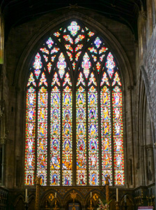
Jesse Window
A Jesse window is a type of stained-glass window, common in medieval churches, that illustrates the "Tree of Jesse," a genealogical family tree tracing Jesus Christ’s ancestry from Jesse, the father of King David. Based on the prophecy in Isaiah 11:1, these windows typically depict a sleeping Jesse at the bottom, with branches growing upward to show kings, prophets, and culminating in the Virgin Mary and the Christ child.
1382 AD: Wycliffe Bible
Wycliffe Bible published.

Wikipedia
1392 AD: Statute of Praemunire
The Statute of Praemunire is enacted during the reign of Richard II, its purpose was to limit the powers of the papacy in England by making it illegal to appeal an English court case to the pope if the king objected, or for anyone to act in a way that recognized papal authority over the authority of the king.
Battle of Shrewsbury
21st July 1403
1401 AD: Melveley Church
There was a 12th Century wooden church at Melveley, however this was burnt down by Owain Glyndwr (Wikipedia in 1401. The present church was built in 1406 and is a rare example of a half-timbered church.

St Peter, Melveley
Patron Saint of England
St. George (died c. 303) was a Roman soldier of Greek origin from Cappadocia (modern Turkey) who became a Christian martyr after refusing to renounce his faith during Diocletian's persecution. While the famous "dragon" legend was added in the Middle Ages, he became the patron saint of England in 1415.
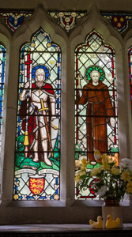
St Catherine, Eaton-under-Heywood
(early) 15th Century AD: Battlefield Church
Battlefield Church was built on the site of the Battle of Shrewsbury.

St Mary Magdalene, Battlefield
1441 AD: Alberbury Priory Dissolved
Alberbury Priory was dissolved in 1441 when King Henry VI, who had seized the alien houses during the Hundred Years War, gave it as an endowment to All Souls' College, Oxford.
Wars of the Roses
1455-1487
Printing Press
In 1476 William Caxton sets up the first printing press in England.
5. Tudor Britain (1485 AD to 1603 AD)
Tudor Britain was defined by the English Reformation and the Dissolution of the Monasteries which was started by Henry VIII and concluded by Elizabeth I in the Elizabethan Religious Settlement, this laid the foundation for Anglicanism…
The founder of the House of Tudor was Henry VII, who became King of England by defeating King Richard III at the Battle of Bosworth Field (the culmination of the Wars of the Roses). The other sovereigns of the House of Tudor were: Henry VIII, Edward VI, Mary I, and Elizabeth I.
- Henry VII: 1485-1509
- Henry VIII: 1509-1547
- Edward VI: 1547-1553
- Mary I: 1553-1558
- Elizabeth I: 1558-1603
The monarchs had different approaches to the religious turmoil of the time, with Henry VIII replacing the Pope as the head of the Church of England but maintaining Catholic doctrines, Edward VI imposing a very strict Protestantism, Mary I attempting to reinstate Catholicism, and Elizabeth I arriving at a compromise position that defined the "not-quite" Protestant Church of England that persists today.
Henry VII 1485-1509
Throughout the reign of Henry VII the Catholic Church remained an integral part of the fabric of every community.
The Last Supper
Leonardo da Vinci paints The Last Supper from 1495-1498.
The Creation of Adam
Michelangelo paints The Creation of Adam from 1508–1512.
Rood Screen
Hughley church has what is considered to be the finest rood screen in Shropshire, which dates from the end of the 15th Century. It is believed to have been moved to the church from Buildwas Abbey following the dissolution of the monasteries under Henry VIII. It is thought to have been made in Ludlow.
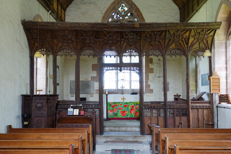
St John the Baptist, Hughley
Henry VIII 1509-1547
Henry VIII acceded to the English throne in 1509 at the age of 17, at that time he was an observant Catholic.
Henry VIII started the English Reformation, but the basis of the reforms was more for political gain, rather than being a theological dispute with the Catholic church - the English Reformation was actually a response to the Pope refusing to annul Henry's marriage to Catherine of Aragon.
The king summoned Parliament as a means to deal with the marriage annulment; as a result Parliament passed laws which abolished papal authority in England and declared Henry to be the head of the Church of England. This meant that the monarch then had final authority over doctrinal disputes. Henry VIII was a religious traditionalist, but relied on Protestants to support and implement his religious agenda.
Henry VIII Reign
Lectern
The iconic brass eagle lecterns, which are a hallmark of English church fittings, predominantly start appearing in English churches in the late medieval period (circa late-15th Century to early-16th Century).
The eagle representis St. John the Evangelist.
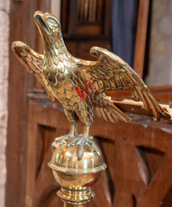
St John the Baptist, Nash
Separation from Rome
1517 AD (31st October)
The Protestant Reformation was gaining momentum in Europe at the start of Henry's reign, it is considered to have started on 31st October 1517, this is when the German monk Martin Luther published the Ninety-five Theses and sends it with a letter to Albert of Brandenburg, Archbishop of Mainz. By the early 1520s Martin Luther’s new ideas were known and being debated in England, but Protestants were a religious minority and heretics under the law.
1521 AD
In 1521 Henry VIII defended the Catholic Church from Martin Luther's accusations of heresy in a book, written with help from the conservative Bishop of Rochester, John Fisher. Entitled "The Defence of the Seven Sacraments" it is described as "one of the most successful pieces of Catholic polemics (a speech or piece of writing expressing a strongly critical attack on or controversial opinion about someone or something) produced by the first generation of anti-Protestant writers". Consequently, Pope Leo X rewarded Henry with the title "Fidei Defensor" (Defender of the Faith) in October 1521 (a title revoked following the king's break with the Catholic Church in the 1530s, but re-awarded to his heir by the English Parliament).
Royal Coat of Arms
After the Pope granted Henry VIII the title 'Defender of the Faith', Royal coats of arms of the king or queen of the day were hung in churches. They were there to remind congregations of the link between the church and the state.
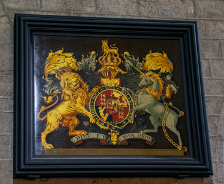
St Giles, Ludford
1526 AD
The Tyndale Bible is published (although it wasn't a complete bible, it was the first English biblical translation that was mass-produced as a result of new advances in the art of printing). The translation had notes critical of the Roman Catholic Church, and the choice of certain words was seen as heresy. The publication helped to spread Protestant ideas, as a result Tyndale was put to death in 1536.
Printed abroad, copies of the bible were smuggled into the England, there were probably 16,000 copies in England by 1536.
1527 AD
In 1527 Henry VIII requested an annulment of his marriage, but the Pope, Clement VII, refused.
1529 AD (3rd November)
In 1529, the King summoned Parliament to deal with the annulment and other grievances against the church, the first sitting was on 3rd November that year. The Catholic Church was a powerful institution in England with a number of privileges. The king could not tax or sue clergy in civil courts. The church could also grant fugitives sanctuary, and many areas of the law were controlled by the church. For centuries, kings had attempted to reduce the church's power, and the English Reformation was a continuation of this power struggle.
The Reformation Parliament sat from 1529 to 1536 and brought together those who wanted reform, but they disagreed on what form it should take. Initially, Parliament passed minor legislation to control ecclesiastical fees, clerical pluralism (the practice of holding more than one ecclesiastical office at a time), and sanctuary.
1530 AD
In October 1530 a meeting of clergy and lawyers advised that Parliament could not empower the Archbishop of Canterbury to act against the Pope's prohibition of the king's request to annul the marriage. Henry thus resolved to take matters further, he first charged eight bishops and seven other clerics with praemunire (the assertion or maintenance of papal jurisdiction, or any other foreign jurisdiction or claim of supremacy in England, against the supremacy of the monarch).
The king then took things further by proceeding against the whole clergy for violating the Statute of Praemunire (1392), which forbade obedience to the Pope or any foreign ruler. Henry wanted the clergy of the Canterbury province to pay £100,000 for their pardon (this was a sum equal to the Crown's annual income). This was agreed by the Convocation (a formal assembly or meeting, particularly of religious leaders or clergy, often for a specific purpose like a synod or a provincial assembly) of Canterbury on 24th January 1531.
1531 AD
On 11th February 1531, William Warham, Archbishop of Canterbury, presented to Convocation that the clergy were to acknowledge the King to be "singular protector, supreme lord and even, so far as the law of Christ allows, supreme head of the English Church and clergy", and this was agreed to. Later, the Convocation of York agreed to the same on behalf of the clergy of York province. That same year, Parliament passed the Pardon to Clergy Act 1531.
(early) 1532 AD
In early 1532, Thomas Cromwell authored and presented the Supplication against the Ordinaries, which was a list of grievances against the bishops, including abuses of power and Convocation's independent legislative authority.
1532 AD (26th March)
On 26th March 1532, the first Act of Annates (Act in Conditional Restraint of Annates) was passed, it mandated the clergy pay no more than 5% of the revenue (annates) normally remitted to Rome. Annates were monies (church taxes) that were collected in England and sent to Rome. They were levied on any diocese by Rome as payment in return for the nomination and papal authorization for the consecration of a bishop. One third of the first year's revenues from the particular diocese went to Rome.
1532 AD (May)
On 10th May 1532, the king demanded of Convocation that the church renounce all authority to make laws. On 15th May 1532, Convocation renounced its authority to make canon law without royal assent, the so called Submission of the Clergy.
1532 AD (August)
The Archbishop of Canterbury, William Warham, dies.
1533 AD (30th March)
Henry wanted Thomas Cranmer, a Protestant who could be relied on to oppose the papacy, to be the next Archbishop of Canterbury. The Pope reluctantly approved Cranmer's appointment, and he was consecrated on 30th March 1533.
1533 AD (7th April)
Rome was still the final authority in all ecclesiastical matters, and the king needed the annulment as he was secretly married to a pregnant Anne. To address this issue, Parliament passed the Act in Restraint of Appeals (Ecclesiastical Appeal Act 1532), the Ecclesiastical Appeal Act 1532 was drafted by Thomas Cromwell on behalf of the king. It forbade all appeals to the Pope on religious or other matters, making the king the final legal authority. This made accepting papal authority or following papal rulings illegal. This effectively made England an independent country in every respect.
1533 AD (23rd May)
Cranmer was now able to grant an annulment of the marriage to Catherine as Henry required, pronouncing on 23rd May 1533 the judgment that Henry's marriage with Catherine was against the law of God.
1533 (11th July)
In response to the marriage annulment, King, Henry VIII, and the Archbishop of Canterbury are excommunicated from the Catholic church by Pope Clement VII.
1533 AD (7th September)
Anne Boleyn gave birth to a daughter, Princess Elizabeth, on 7th September 1533.
1534 AD
In 1534, Parliament took further action to limit papal authority in England. A new Heresy Act ensured that no-one could be punished for speaking against the Pope and also made it more difficult to convict someone of heresy; however, sacramentarians (a person who maintains that the Eucharistic elements have only symbolic significance and are not corporeal manifestations of Christ) and Anabaptists (a type of Protestant Christian who believes baptism is only for adults who can consciously choose to follow Jesus) continued to be vigorously persecuted.
1534 AD (30th March)
The Act Absolute Restraint of Annates (Appointment of Bishops Act 1533) outlawed all annates to Rome (payments were to be tranferred to the king) and also ordered that if cathedrals refused the king's nomination for bishop, they would be liable to punishment by praemunire. The act was given royal ascent on 30th March 1534.
Before the Act, the dean and chapter of a cathedral held an election for a new bishop and customarily chose the candidate supported by the King. The Act bound the cathedral chapter to elect the candidate whom the King selected in his "letter missive". If the dean and chapter declined to make the election accordingly, or if the bishops of the church refused to consecrate the King's candidate, then they would be punished by praemunire. The Act therefore established royal domination of the election of bishops as an enforceable legal right with a heavy penalty.
1534 AD (30th March)
Another Act transferred the taxes on ecclesiastical income from the Pope to the Crown. The Act Concerning Peter's Pence and Dispensations (Ecclesiastical Licences Act 1533) outlawed the annual payment by landowners of Peter's Pence to the Pope, and transferred the power to grant dispensations and licences from the Pope to the Archbishop of Canterbury. This Act also reiterated that England had "no superior under God, but only your Grace" and that Henry's "imperial crown" had been diminished by "the unreasonable and uncharitable usurpations and exactions" of the Pope.
1534 AD (3rd November)
The first Act of Supremacy is passed by Parliament, it granted King Henry VIII and subsequent monarchs royal supremacy and stated that the reigning monarch was the supreme head of the Church of England. In the Act of Supremacy, Henry VIII withdrew support for the authority of the pope and the Roman Catholic Church and asserted the independence of the Ecclesia Anglicana. He appointed himself and his successors as the supreme rulers of the English church.
1534 AD (18th December)
In case the Act of Supremacy should be resisted, Parliament passed the Treasons Act 1534, which made it high treason punishable by death to deny royal supremacy. The Treasons Act 1534 is given royal assent on 18th December 1534.
This act was followed by the Treasons Act 1543, the Treasons Act 1547, the Treasons Act 1551 and the Treasons Act 1553.
1535 AD (30th May)
In 1534, Thomas Cromwell undertook, on behalf of the King, an inventory of the endowments, liabilities and income of the entire ecclesiastical estate of England and Wales, including the monasteries (known as the Valor Ecclesiasticus), for the purpose of assessing the Church's taxable value. At the same time, the King had Parliament authorise Cromwell to "visit" all the monasteries, including those like the Cistercians previously exempted from episcopal oversight by papal dispensation, to instruct them in their duty to obey the King and reject papal authority.
Ordered to be completed by 30 May 1535, the Valor Ecclesiasticus (Latin: "church valuation") was a survey of the finances of the church in England, Wales and English controlled parts of Ireland made in 1535 on the orders of Henry VIII.
Wales Incorporated
The Laws in Wales Acts 1535 and 1542 officially incorporated Wales into the Kingdom of England, bringing to an end the Marcher Lordships
1535 AD
The Coverdale Bible, compiled by Myles Coverdale and published in 1535, was the first complete Modern English translation of the Bible (not just the Old, or New Testament), and the first complete printed translation into English.
1536 AD (18th July)
Finally, in 1536, Parliament passed the Act against the Pope's Authority (See of Rome Act 1536). The act attacked the authority of the Pope and his followers and declared that those who had anything to do with the Bishop of Rome or his See would be liable for prosecution. Thus removing the last part of papal authority which was still legal - Rome's power in England to decide disputes concerning Scripture.
The church in England was now completely separated from Rome and Henry VIII has the power to administer it, tax it, appoint its officials, and control its laws. It also gave him control over the church's doctrine and ritual.
While Henry remained a traditional Catholic, his most important supporters in breaking with Rome were Protestants. What followed was a period of doctrinal confusion as both conservatives and reformers attempted to shape the church's future direction. The reformers were aided by Cromwell, who in January 1535 was made vicegerent in spirituals. Effectively the King's vicar general, Cromwell's authority was greater than that of bishops, even the Archbishop of Canterbury. Also, largely due to Anne Boleyn's influence, a number of Protestants were appointed bishops between 1534 and 1536.
For Cromwell and Cranmer, the next step in the Protestant agenda was attacking monasticism, which was associated with the doctrine of purgatory. One of the primary functions of monasteries was to pray for the souls of their benefactors and for the souls of all Christians. While the King was not opposed to religious houses on theological grounds, there was concern over the loyalty of the monastic orders, which were international in character and resistant to the Royal Supremacy. The Franciscan Observant houses were closed in August 1534 after that order refused to repudiate papal authority.
Lutheran Alliance
Henry feared an invasion from a united Catholic Europe following his break with Rome, and so sought to create a political and military alliance with the Schmalkaldic League - an alliance of Lutheran (Protestant) German rulers, these negotiations, driven by Thomas Cromwell, took place from circa 1535 to 1539. As a consequence, Lutheran ideas were brought to England.
In 1536, Convocation adopted the first doctrinal statement for the Church of England, the Ten Articles. This was followed by the Bishops' Book in 1537. These established a semi-Lutheran doctrine for the church. Justification by faith, qualified by an emphasis on good works following justification, was a core teaching. The traditional seven sacraments were reduced to three - baptism, Eucharist and penance. Catholic teaching on praying to saints, purgatory and the use of images in worship was undermined as a result.
In August 1536, the same month the Ten Articles were published, Cromwell issued a set of Royal Injunctions to the clergy. Minor feast days were changed into normal work days, including those celebrating a church's patron saint and most feasts during harvest time. The rationale was partly economic as too many holidays led to a loss of productivity. Protestants also considered feast days to be examples of superstition.
Clergy were to discourage pilgrimages and instruct the people to give to the poor rather than make offerings to images. The clergy were also ordered to place Bibles in both English and Latin in every church for the people to read.
By 1538 it became compulsory for all churches to own a Bible in accordance with Cromwell's Injunctions to the Clergy.
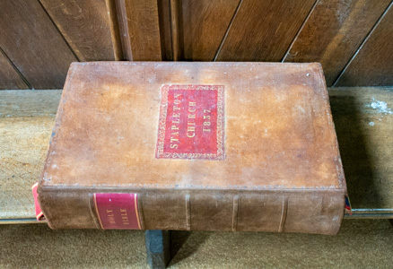
St John the Baptist, Stapleton
In February 1538, the famous Rood of Grace was condemned as a mechanical fraud and destroyed at St Paul's Cross. In July, the statues of Our Lady of Walsingham, Our Lady of Ipswich, Remains of Finchale Priory, a Benedictine monastery near Durham that was closed in 1535 and other Marian images were burned at Chelsea on Cromwell's orders.
In September 1538, Cromwell issued a second set of royal injunctions ordering the destruction of images to which pilgrimage offerings were made, the prohibition of lighting votive candles before images of saints, and the preaching of sermons against the veneration of images and relics. Afterwards, the shrine and bones of Thomas Becket, considered by many to have been martyred in defence of the church's liberties, were destroyed at Canterbury Cathedral.
1543 AD (12th May)
The Act for the Advancement of True Religion is given royal assent. The Act restricted the reading of the English Bible to clerics, noblemen, the gentry and richer merchants, and foreshadowed the promulgation of future authorized versions. Women below gentry rank, servants, apprentices and generally poor people were forbidden to read it, and certainly not to others. Women of the gentry and the nobility were only allowed to read it in private.
The Act was repealed by Edward VI in the Treason Act 1547.
In 1544, the English Parliament granted the king the title "Defender of the Faith" after Pope Paul III had revoked it due to Henry's break from the Roman Catholic Church.
Dissolution of the Monasteries (1536 AD to 1541 AD)
The dissolution of the monasteries (sometimes referred to as the suppression of the monasteries) was the set of administrative and legal processes put in place by King Henry VIII and the English Parliament; the dissolution was undertaken between 1536 and 1541. The intent was to disband the Catholic monasteries, priories, convents and friaries in England, Wales and Ireland by seizing their wealth, disposing of the assets and providing for the former personnel and functions.
The policy was originally envisioned as a way to increase the regular income of the Crown, however, much of the former monastic property was sold off to fund the Henry's military campaigns in the 1540s.
At the time the Act of Supremacy was passed in 1534, there were nearly 900 religious houses in England.
As a consequence of the endowments when they were founded, religious houses in the 16th Century were wealthy - they controlled appointment to about two-fifths of all parish benefices in England, disposed of about half of all ecclesiastical income, and owned around a quarter of the nation's landed wealth.
The dissolution did not greatly affect English parish church activity. Parishes that had formerly paid their tithes to a religious house now paid them to a lay impropriator, but rectors, vicars, and other incumbents remained in place. Congregations that had shared monastic churches continued to do so, with former monastic parts now walled off and derelict. Most parish churches had been endowed with chantries, each maintaining a stipended priest to say Mass, and these were also unaffected.
Also after the dissolution of the monasteries, over a hundred collegiate churches in England remained, whose chantry endowments maintained regular choral worship. But they were dissolved under the Chantries Act 1547 by Henry's son Edward Vi, their property being absorbed into the Court of Augmentations.
1536 AD (14th April)
The Suppression of Religious Houses Act 1535 marked the beginning of the legal process by which King Henry VIII set about the Dissolution of the Monasteries. The monasteries were dissolved by two Acts of Parliament, the First Suppression Act in 1535 and the Second Suppression Act in 1539.
The first Act applied only to lesser houses "which have not in lands, tenements, rents, tithes, portions, and other hereditaments, above the clear yearly value of two hundred pounds", attacking such houses as dens of iniquity and proposing that those in them should be "committed to great and honourable monasteries of religion" and "compelled to live religiously".
Parliament met on 4th February 1536 and received a digest of the report Valor Ecclesiasticus. Thomas Cromwell's plan to reform the monasteries was denied and instead Thomas Audley's plan for the Dissolution of the Monasteries was passed as the Act.
1536 AD
Thomas Cromwell founded the Court of Augmentation in 1536, the Court's primary function was to gain better control over the land and finances formerly held by the Roman Catholic Church in England. The Court of Augmentations was incorporated into the Exchequer in 1554 as the Augmentation Office.
1536 AD
Wombridge Priory falls within the scope of the Suppression of Religious Houses Act 1535 and is disolved.
1536 AD
Buildwas Abbey was suppressed in 1536.
1538 AD
Bromfield Priory is closed as part of the dissolution of the monasteries.
1538 AD (May)
White Ladies Priory dissolution was complete by May 1538.
1538 AD (16th October)
Lilleshall was not immediately dissolved but, like most of the marginal houses, surrendered itself to the king, before being compulsorily suppressed, on 16 October 1538.
Parish Chest
The Parish registers for baptisms, marriages and burials, were first introduced by Thomas Cromwell in 1538. Cromwell required that every parish church was to acquire a sure coffer (a parish chest) within which their records could be securely stored. The idea of the parish chest was not new, as they could have been found in churches from early medieval times. Often no more than a hollowed out tree trunk that was secured with three locks, the keys to which were to be kept by the Bishop, the Priest and by a religious layman. What was new, in Tudor times, was the notion that Cromwell dictated that accurate records were to be kept and the responsibility to do so was placed on the parish officials to keep these records safe.
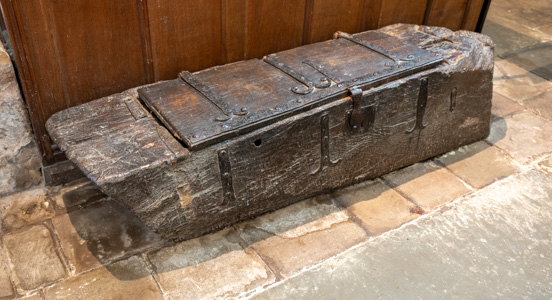
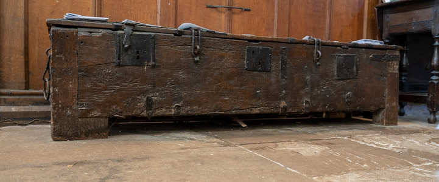
St Gregory, Morville
1539 AD (28th June)
The Suppression of Religious Houses Act 1539 provided for the dissolution of 552 monasteries and houses remaining after the Suppression of Religious Houses Act 1535.
1539 AD
Despite being a wealthy house with an income over £200, Haughmond Abbey surrenders - the precedent and the storm of criticism unleashed by the dissolution of the majority of religious houses intimidated many of the more successful institutions into surrender. Haughmond took this step in 1539, the year before the Second Act of Dissolution. The commission to dissolve the abbey was issued from Woodstock Palace on 23 August 1539 and signed by Thomas Cromwell. A deed of surrender was drawn up on 19 September. The abbot, Thomas Corveser, the prior, John Colfox, and nine canons signed it by 16 October, acknowledging Henry VIII as supreme over the Church of England on earth.
1540 AD (25th January)
Shrewsbury Abbey was one of the last to surrender, not because it put up any resistance, but because it lay at the end of the commissioners' circuit.
In 1539 Cromwell moved to the dissolution of the larger monasteries which had escaped earlier, Shrewsbury among them. Henry VIII personally devised a plan to form at least thirteen new dioceses so that most counties had a cathedral (a former monastery). This plan included making Shrewsbury Abbey a cathedral, but, while new dioceses were established elsewhere the plans were never completed at Shrewsbury.
1540 AD (26th January)
Wenlock Priory was dissolved on 26 January 1540. Proposals had been made for creating a new diocese, with the church at Wenlock becoming a cathedral but these were not implemented, and most of the buildings were destroyed.
John Leland
In 1540, John Leland described Ludlow church as "very Fayre and large and richly adorned and taken for the Fayrest in all these parts". It is the largest parish church in the county and was endowed by the wealthy Palmer's Guild.
1540 AD
Morville Priory is dissolved (it had been granted to Shrewsbury as a cell).
Reference Material
| [[Dissolution of the Monasteries.pdf]] | Wikipedia |
1540 AD (23rd March)
Waltham Abbey in Essex is generally recognized as the last abbey to be surrendered to King Henry VIII's commissioners during the Dissolution of the Monasteries.
1545 AD
Abolition of Chantries Act - following the English Reformation Parliament passed an Act in 1545 which defined chantries as representing misapplied funds and misappropriated lands. The Act provided that all chantries and their properties would thenceforth belong to the king for as long as he should live.
Devil's Door
Until the Middle Ages, the north face of a church of a church was considered to belong to the Devil and people considered heathens. Christian churches were often built on pre-Christian sacred sites, but the sites were still considered sacred to non-Christians who would continue to visit the sites. A doorway would often be inserted in the "heathen" north side of the church to allow them to enter and worship on the site. Because of the association of that side with the Devil, the name "Devil's door" became established.
As beliefs changed following the English Reformation, the doorways were often bricked up.
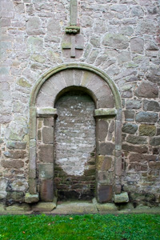
St Peter, Stanton Lacy
Suffragan Bishops
1534 AD (18th December)
An Acte for nominacion and consecracyon of Suffragans wythin this Realme.
The Act of the Parliament of England authorises the appointment of suffragan (i.e. assistant) Bishops in England and Wales. The tradition of appointing suffragans named after a town in the diocese other than the town the diocesan bishop is named after can be dated from this act.
The act named Shrewsbury as a specific suitable Suffragaon See.
1537 AD (24th June)
Lewis Thomas is consecrated the first Anglican Bishop of Shrewsbury, he was the last abbot of Cwmhir Abbey. He was appointed under the provisions of the Suffragan Bishops Act 1534, this was probably for the diocese of Llandaff. He died in 1561, from which time the post was in abeyance until 1888.
Wikipedia
Edward VI 1547 AD to 1553 AD
Edward VI inherited the throne at the age of 9, he was educated a protestant. But the real power was in the hands of the regency council, which elected the protestant Edward Seymour, 1st Duke of Somerset, to be Lord Protector, who together with Cranmer planned further reforms to the church.
In August 1547, thirty commissioners (nearly all Protestants) were appointed to carry out a royal visitation of England's churches. The Royal Injunctions of 1547 issued to guide the commissioners were borrowed from Cromwell's 1538 injunctions but revised to be more radical. Church processions, one of the most dramatic and public aspects of the traditional liturgy, were banned. The injunctions also attacked the use of sacramentals, such as holy water. Lighting votive candles before saints' images had been forbidden in 1538, and the 1547 injunctions went further by outlawing those placed on the rood loft. Reciting the rosary was also condemned.
The injunctions set off a wave of iconoclasm in the autumn of 1547 - while the injunctions only condemned images that were abused as objects of worship or devotion, the definition of abuse was broadened to justify the destruction of all images and relics. Stained glass, shrines, statues, and roods were defaced or destroyed. Church walls were whitewashed and covered with biblical texts condemning idolatry. There was widespread opposition, some parishes concealed items to avoid their destruction; bishops who protested were imprisoned.
A new Parliament met in November 1547, which began to dismantle the laws passed during Henry VIII's reign to protect traditional religion. The Act of Six Articles was repealed, decriminalizing denial of the real, physical presence of Christ in the Eucharist. The old heresy laws were also repealed, allowing free debate on religious questions. The Sacrament Act allowed the laity to receive communion under both kinds, the wine as well as the bread. The Chantries Act 1547 abolished the remaining chantries and confiscated their assets.
In 1548 there were further significant changes - on 18 January, the Privy Council abolished the use of candles on Candlemas, ashes on Ash Wednesday and palms on Palm Sunday. On 21 February, the council explicitly ordered the removal of all church images. On 8 March, a royal proclamation announced a more significant change, the first major reform of the Mass and of the Church of England's official eucharistic theology. The "Order of the Communion" was a series of English exhortations and prayers that reflected Protestant theology and were inserted into the Latin Mass. The Book of Common Prayer was then created and authorised by the Act of Uniformity 1549, although enforcement of the new liturgy did not always take place without a struggle.
In 1549, Parliament also legalized clerical marriage, something already practised by some Protestants (including Cranmer).
Protestant bishops had until now been the minority, but In 1550-1551 the episcopate was purged of conservatives who were forced to resign. The new Protestant episcopate then made further changes to the mass such as demanding the removal of stone altars (to be replaced by tables). Finally, in 1552 further revisions to the prayer book were made, resulting in the 1552 Book of Common Prayer.
When Edward fell ill, an attempt was made to create a new plan of succession to prevent his Catholic sister, Mary, inheriting the throne, but this failed.
1547 AD
The first Book of Homilies was published, from which all clergy were to preach on Sundays. The homilies were explicitly Protestant in their content, condemning relics, images, rosary beads, holy water, palms, and other "papistical superstitions".
1547 AD (24th December)
The Sacrament Act 1547 is given royal assent.
1547 AD
Abolition of Chantries Act - because Henry VIII lived for only two years after the original Act was passed, few chantries were closed or transferred to him. His young son and successor, King Edward VI, signed a new Act in 1547, which ended 2,374 chantries and guild chapels and seized their assets; it also instituted inquiries to determine all of their possessions.
1549 AD (14th March)
The Act of Uniformity 1548 is given royal assent. The Act established the 1549 version of the Book of Common Prayer as the sole legal form of worship in England. Before 1549, the churches of England used various different versions of the Latin language Missal.
The Act was not repealed until 1974.
1549 AD
The first prayer book (the Book of Common Prayer) is published in the reign of King Edward VI, created by Thomas Crammer (Archbishop of Canterbury).
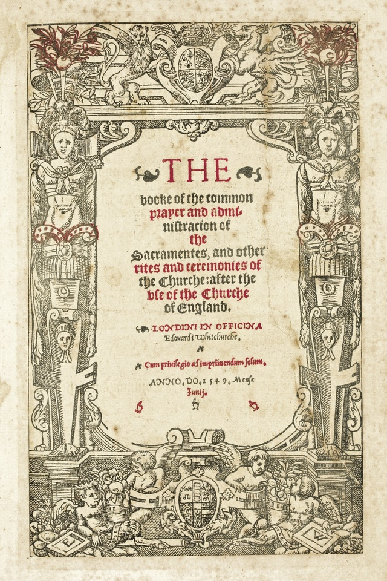
Lychgates
Although they date back to at least the 7th Century, the use of the lychgate was affirmed in the 1549 book of common prayer as it required the priest to meet the corpse at the churchyard entrance. Consequently, many lychgates date from this period. The name derives from the Anglo-Saxon "lych" meaning "corpse".
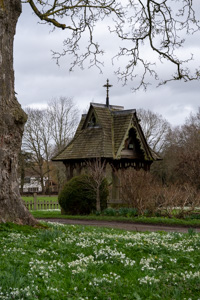
St Gregory, Morville
Use of English
With the publication of the Book of Common Prayer in 1549, English was first formally and systematically introduced into Church of England replacing Latin.
The following entry is found in the parish register of Much Wenlock: Note that upon the 26 daye of June was service celebrated first in the Englysh tonge, anno primo Elizabethae 1559 (ref: Nooks and Corners of Shropshire).
1552 AD (15th April)
The Act of Uniformity 1551 is given royal assent. It replaced the 1549 Book of Common Prayer with a revised and more clearly Protestant version, the 1552 Book of Common Prayer. Thomas Crammer (Archbishop of Canterbury), the principal author of both the 1549 and 1552 versions of the liturgy maintained that there was no theological difference between the two. Anyone who attended or administered a service where this liturgy was not used faced six months imprisonment for a first offence, one year for a second offence, and life for a third.
This Act was repealed by Mary I in 1553.
1552 AD
A more reformed revision of the prayer book was created by Thomas Crammer (Archbishop of Canterbury).
Mary I 1553 AD to 1558 AD
Mary I, a Catholic, had been allowed to observe Mass privately prior to becoming queen.
Mary I rejected the break with Rome instituted by her father and the establishment of Protestantism by her brother's regents. Mary I's reign brought radical religious changes, reversing the Protestant Reformation by restoring Catholicism, re-establishing papal authority, and reinstating traditional practices like the Mass, but this was achieved through fierce persecution, burning nearly 300 Protestants, including Archbishop Cranmer, at the stake for heresy, earning her the nickname "Bloody Mary".
Despite issuing a proclamation that Mary would not compel any of her subjects to follow her religion, leading Protestants including the Archbishop of Canterbury, Thomas Cranmer, had been imprisoned by the end of 1553. Also, church doctrine was restored to the form it had taken in the 1539 Six Articles of Henry VIII, which meant that married priest were deprived of their benefices.
In returning the English church to Roman jurisdiction, Pope Julius III had to make a major concession: the confiscated monastery lands were not returned to the church but remained in the hands of their influential new owners. By the end of 1554, the Pope had approved the deal, and the Heresy Acts were revived by Parliament in January of 1555. Many rich Protestants fled into exile, but many remained to proclaim their beliefs and so became targets of the new laws - the first executions occurred in February 1555. Although Cranmer recanted, repudiated Protestant theology, and rejoined the Catholic faith, he was executed in March 1556.
As with Edward, Mary considered changing the succession by removing Elizabeth due to her Protestant convictions (although Elizabeth had superficially converted to Catholicism only to save her life after being imprisoned).
1554 AD
Henry VIII's Act of Supremacy was repealed in 1554.
1554 AD
The Court of Augmentations is incorporated into the Exchequer in 1554 as the Augmentation Office.
Elizabeth I 1558 AD to 1603 AD
When Elizabeth inherited the throne, England was bitterly divided between Catholics and Protestants. The Elizabethan Religious Settlement was implemented from 1559 to 1563, it formed the end of the Reformation. The settlement shaped the Church of England's doctrine and liturgy and laid the foundation for the identity of Anglicanism.
The settlement was dismantled by the Puritans following the overthrow of the monarchy during the English Civil War. With the restoration of the monarchy in 1660, the religious settlement was also restored, with Anglicans defining their church as the middle ground between the extremes of Catholicism and Protestantism.
1559 AD (8th May)
The second Act of Supremacy in 1558 is given royal assent.
The first Elizabethan Parliament passed the second Act of Supremacy in 1558 that re-established the Church of England's independence from Rome, declared Elizabeth the Supreme Governor of the Church of England and instituted an Oath of Supremacy requiring anyone taking public or church office to swear allegiance to the monarch as head of the Church and state. Anyone refusing to take the oath could be charged with treason.
1559 AD (8th May)
The Act of Uniformity 1558 is given royal assent. The Act mandated worship according to the 1559 Book of Common Prayer and was part of the Elizabethan Religious Settlement - Elizabeth I wanted to unify the church. All persons had to attend Anglican services once a week or be fined 12 pence. Other Acts concerned with this settlement were the Act of Supremacy 1558 and the Thirty-Nine Articles.
On 27 September 1650, the Act was repealed by the Rump Parliament of the Commonwealth of England with the "Act for the Repeal of several Clauses in Statutes imposing Penalties for not coming to Church", but this Act was rendered null and void with the Restoration of the monarchy in 1660.
The Act was not fully repealed until 1974.
1559 AD
Queen Elizabeth I's first Parliament authorised the 1559 prayer book (which effectively re-introduced the 1552 prayer book following the restoration of Catholic worship under Queen Mary I, but with some modifications were made to appeal to Catholics and Lutherans).
1571 AD
The Thirty-nine Articles are finalised and incorporated into the Book of Common Prayer.
16th Century Church Building
The building of churches across England came to an abrupt halt at the end of the reformation (16th Century). During the reign of Elizabeth I the only church construction in Shropshire was the rebuild of the chancel at St James, Shipton (1589), the aisle at Ludford (1555), the tower at Sutton Maddock (1579), and the fit out of the puritan chapel at Langley (1546).
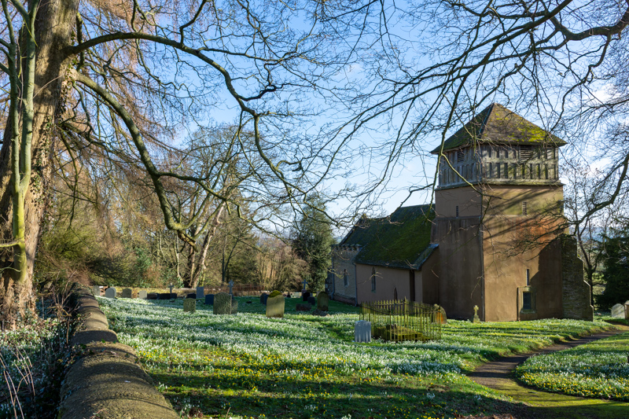

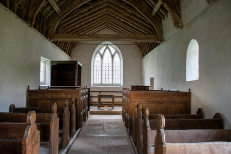
Reference Material
Tudor Britain
English Reformation
Dissolution of the Monasteries
| [[Suppression of Religious Houses Act 1535.pdf]] | Wikipedia |
| [[Suppression of Religious Houses Act 1539.pdf]] | Wikipedia |
6. Stuart Britain (1603 AD to 1714 AD)
A turbulent time in English history when Puritanism came to the fore...which ultimately resulted in the religious landscape assuming its present form...
James I 1603 AD to 1625 AD
The Gunpower Plot (November 1605) sought to overthrow the Protestant government to restore Catholic rule in England. After the Gunpowder Plot, the king sanctioned measures to control English Catholics. In May 1606, Parliament passed the Popish Recusants Act, which could require any subject to take an Oath of Allegiance denying the pope's authority over the king. James was conciliatory towards Catholics who took the Oath of Allegiance, and tolerated crypto-Catholicism even at court (Crypto-Religion is the secret adherence to one religion whilst publicly professing to be another faith).
[[Popish_Recusants_Act_1605.pdf]] : Wikipedia
[[Oath_of_Allegiance_of_James_I_of_England.pdf]] : Wikipedia
Charles I 1625 AD to 1649 AD
The English Reformation was at the forefront of political debate, Puritan reformers considered Charles too sympathetic to Arminianism, and opposed his desire to move the Church of England in a more traditional and sacramental direction. (Arminianism is a Protestant theological tradition, named after Jacobus Arminius, that emphasizes human free will and God's universal love in salvation and contrasts with Calvinism.)
Charles I was executed for high treason in 1649, following England's Civil Wars, because of his refusal to share power with Parliament, belief in divine right, and attempts to rule as an absolute monarch. (The divine right of kings is a 16th–18th Century political and religious doctrine asserting that monarchs derive their authority directly from God, not from their subjects, parliament, or the church. This absolute power meant rulers were accountable only to God, justifying the defiance of traditional feudal limitations and establishing autocratic rule.)
English Interregnum 1649 AD to 1660 AD
A period of intense religious upheaval chacterised by the dismantling of the CofE episcopal structure and the rise of Puritan influence.
Charles II 1660 AD to 1685 AD
As part of the restoration, the Church of England was restored as the national Church in England, backed by the Clarendon Code and the Act of Uniformity 1662.
James II 1685 AD to 1688 AD
Despite being Catholic, James’ accession to throne was tolerated following the turmoil of the previous years - James II was the last Catholic monarch. However, tolerance of James's personal views did not extend to Catholicism in general, and both parliament refused to pass measures viewed as undermining the primacy of the Protestant religion. The king’s attempts to impose them by absolutist decrees as a matter of his perceived divine right met with opposition.
The Seven Bishops were members of the Church of England tried and acquitted for seditious libel in the Court of Kings Bench in June 1688 after they submitted a petition requesting the reconsideration of the King's religious policies. The very unpopular prosecution of the bishops is viewed as a significant event contributing to the November 1688 Glorious Revolution and deposition of James II.
Wikipedia
The Glorious Revolution was caused by deep-seated fears of a Catholic dynasty in Protestant England, stemming from King James II's attempts to restore Catholicism and increase royal power, clashing with Parliament's authority. It led to the deposition of King James II in November 1688 - he was replaced by his daughter Mary II.
Wikipedia
Mary II 1689 AD to 1694 AD
Both Mary II and Anne were staunch Protestants, despite having Catholic parents, their reigns reinforced the Protestant succession.
Puritans vs Conservatives
At the start of the reign of James I, Puritans presented the king with the Millenary Petition - this was a petition for church reform, which was referred to the Hampton Court Conference of 1604. The outcome of the conference was agreement to produce a new version of the Book of Common Prayer and a new translation of the Bible. While a disappointment for Puritans, the provisions were aimed at satisfying moderate Puritans and isolating their more radical counterparts.
Also during the reign of James I, the vast land holdings seized from the monasteries under Henry VIII of England in the 1530s were sold, mostly to local gentry, greatly expanding the wealth of that class of gentlemen.
In terms of religious affiliation in England, the Catholics were down to about 3% of the population, but comprised about 12% of the gentry and nobility.
Through the reigns of James I and Charles I, and culminating in the English Civil War (which resulted in the protectorate of Oliver Cromwell), there were significant swings back and forth between two factions: the Puritans (and other radicals) who sought more far-reaching reform, and the more conservative churchmen who aimed to keep closer to traditional beliefs and practices.
Christmas is Abolished
Charles I was still on the throne in 1647, when the English Parliament passed an Ordinance to abolish Christmas, along with Easter and Whitsuntide, due to the influence of Puritans who considered the celebrations to be unscriptural and associated with excess. This ban was unpopular and led to riots, and enforcement included soldiers breaking up services and closing shops on December 25th.
Under the Protectorate of the Commonwealth of England from 1649 to 1660, Anglicanism was disestablished, presbyterian ecclesiology was introduced as an adjunct to the Episcopal system, the Articles were replaced with a non-Presbyterian version of the Westminster Confession (1647), and the Book of Common Prayer was replaced by the Directory of Public Worship.
Despite this, about one quarter of English clergy refused to conform. In the midst of the apparent triumph of ==Calvinism==, the 17th Century did ultimately result in a Golden Age of Anglicanism.
Jews Return to England
Cromwell was aware of the contribution that Jewish financiers made to the economic success of Holland, now England's leading commercial rival. It was this that led to his encouraging Jews to return to England, 350 years after their banishment, in the hope that they would help speed up the recovery of the country after the disruption of the Civil Wars.
Restoration
King Charles II restored Christmas in England in 1660 when he returned to the throne, lifting the ban that had been put in place by the Puritan-dominated Parliament during the English Civil Wars. The Restoration of Charles II (in 1660 and which saw the end of Puritan rule) also saw Anglicanism being restored to a form not far removed from the Elizabethan version. The 1662 revision of the Book of Common Prayer became the unifying text of the Church after the English Civil War.
King Charles Ii also restored priests who had been expelled from their benefices and actively appointed his supporters who had resisted Cromwell to vacancies. He translated the leading royal supporters to the most prestigious and rewarding sees. He also considered the need to reestablish episcopal authority and to reincorporate "moderate dissenters" in order to effect Protestant reconciliation.
Further Toleration
James II was overthrown by William of Orange in 1688, and the new king moved quickly to further ease religious tensions. Many of his supporters had been English Dissenters or Nonconformist non-Anglicans. With the Act of Toleration enacted on 24 May 1689, Nonconformists had freedom of worship. That is, those Protestants who dissented from the Church of England such as Baptists, Congregationalists and Quakers were allowed their own places of worship and their own teachers and preachers, subject to acceptance of certain oaths of allegiance. These privileges expressly did not apply to Catholics and Unitarians, and it continued the existing social and political disabilities for dissenters, including exclusion from political office. The religious settlement of 1689 shaped policy down to the 1830s.
The Middle Ground
The religious landscape of England assumed its present form, with an Anglican established church occupying the middle ground, and Roman Catholics and those Puritans who dissented from the establishment, too strong to be suppressed altogether, having to continue their existence outside the national church rather than controlling it.
Jacobean
The Jacobean era was 1603-1625 during the reign of King James I, design and architecture during this this period represents a transitional style between Elizabethan and Barique. Furniture, including fixtures in churches, was dark oak and of heavy construction, and Renaissance-inspired carvings. Characterized by sharp, rectilinear lines, it features intricate geometric patterns, floral motifs, and turned legs.
Many pulpits, pews and other church furniture are Jacobean due to the change to preaching style services following the English Reformation.
1603 AD
The Millenary Petition was a list of requests given to James I by Puritans in 1603 when he was travelling to London in order to claim the English throne. The carefully worded document expressed Puritan distaste regarding the state of the Church of England, and took into consideration James' religious views as well as his liking for a debate, as written in Basilikon Doron. It was claimed, but not proven, that the petition had 1,000 signatures of Puritan ministers. The petition is referred to as it is, as a reference to the purported mille, meaning 1,000, signers.
While many of the main Puritan goals were rebutted, the petition did culminate in the Hampton Court Conference, which eventually led James to authorize the 1604 minor revision of the Book of Common Prayer. The most substantial outcome of the conference was the commission of a new English translation of the Bible, now known as the King James Version.
1603 AD
Pulpits are made compulsory in English churches, this was part of a broader push to standardize church fittings to support the preaching of Protestant doctrine and, in some contexts, to ensure a proper setting for reading royal proclamations.

St Laurence, Ludlow
1604 AD (Januray)
The Hampton Court Conference is convened (at Hampton Court Palace) for discussion between King James I of England and representatives of the Church of England, including leading English Puritans. The conference resulted in the 1604 Book of Common Prayer and, in 1611, the King James Version of the Bible.
1604 AD
King James I ordered some further changes, the most significant being the addition to the Catechism of a section on the Sacraments.
1606 AD
Norton-in-Hales church is notable as it has one of the earliest known commissions by Inigo Jones. Dating from 1606 and made from Derbyshire alabaster, the commission is a monument to Frances Cotton who died in childbirth. The monument was later amended to incorporate Sir Rowland Cotton himself who died in 1635. Cotton had various appointments in Shropshire including High Sheriff, member of the Council of the Marches and MP.
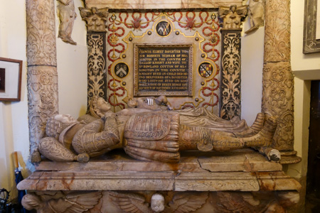
St Chad, Norton-in-Hales
Chief Justice of Leighton of Plaish (died 1607)
The earliest monument in Shropshire which depicts the deceased lying on his side.

St James, Cardington
1611 AD
The King James Bible is published. It was commissioned in 1604 and sponsored by King James VI & I.
(early) 17th Century: Pews
Following the English Reformation, pews became a more prominent feature of English churches due to the rise in preaching. In the medieval period stone benches were placed against the walls, but from the Jacobean period onwards box pews became prominent.
Worthen church has a collection of pews which is considered to be the finest assembly of ancient pews in Shropshire. The box pews are Jacobean and the plain benches are possibly medieval.
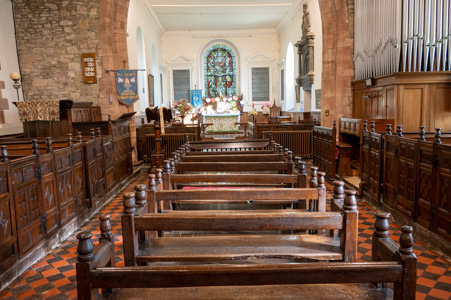
All Saints, Worthen
1620 AD
Differing from their contemporary Puritans (who sought to reform and purify the Church of England), the Pilgrims chose to separate themselves from the Church of England, which forced them to pray in private. They believed that its resistance to reform and Roman Catholic past left it beyond redemption. Starting in 1608, a group of English families left England for the Netherlands, where they could worship freely. By 1620, the community determined to cross the Atlantic for America, which they considered a "new Promised Land”, where they would establish Plymouth Colony.
Mayflower was an English sailing ship that transported a group of English families, known today as the Pilgrims, from England to the New World in 1620.

St James, Shipton
1640 AD to 1641 AD
Richard Baxter lived in Bridgnorth. Originally from Rowton, Baxter was an English Nonconformist church leader and theologian. Most notably, following the Act of Uniformity 1662, Baxter refused an appointment as Bishop of Hereford and was expelled from the Church of England. He became one of the most influential leaders of the Nonconformist movement, spending time in prison. His views remain controversial within the Calvinist tradition of Predestination because he taught that Christians are placed under a type of faith-law.

Wikipedia
English Civil War (1642 to 1651)
During the Civil War on 31st March 1646, St Leonard's church at Bridgnorth was used by Cromwell's troops as an ammunition store. A cannon shot caused it to explode, and as a result fire swept through the town. The church was repaired, and in the seventeenth-century, the nave roof was installed. The church is now almost entirely a Victorian restoration, notably the width of the nave and aisles together is not much less than that of St Paul's Cathedral in London.

Sir Isaac Newton (4th January 1643 to 31st December 1727)
Newton wrote extensively on theology, producing more written words on the subject than on physics and mathematics combined, but he published very little of it during his lifetime due to his unorthodox, anti-Trinitarian views.
1644 AD
The Directory for Public Worship (a liturgical manual) is produced by the Westminster Assembly (The Westminster Assembly of Divines was a council of divines (theologians) and members of the English Parliament appointed from 1643 to 1653 to restructure the Church of England) to replace the Book of Common Prayer. It was approved by the Parliament of England (the "Long Parliament") in 1644.
Protectorate of the Commonwealth of England
1653 - 1659 AD the Protectorate of the Commonwealth of England - a republican period during which England was ruled by a Lord Protector, initially Oliver Cromwell.
17th Century Church Building
In the 17th Century, a small number of churches were built (or rebuilt or otherwise repaired after the Civil War) in Shropshire, but these were done in the Gothic style, despite the fact that there was a move to the classical style (being led by Inigo Jones).
St John the Baptist, Stokesay, was destroyed during the English Civil War; the current church is a rare example of a church extensively rebuilt during the Puritan period (1654) although some Norman features survive.

St Bartholomew, Benthall, originally was a chapel which was destroyed in the Civil War - the present church was built to replace it in 1667. The church is considered to be a fine example of a restoration era (the post Civil War Stuart period) church.

The Jacobean style is the second phase of Renaissance architecture in England, which followed the Elizabethan style. It is named after King James I of England, with whose reign (1603–1625 in England) it is associated. At the start of James’ reign there was little stylistic change in architecture, as Elizabethan trends continued. However, James' death in 1625 coincided with a decisive change towards more classical architecture, with Italian influence, which was led by Inigo Jones. The style is sometimes called Stuart architecture, or English Baroque.
Other notable church builds in the 17th Century include: Condover which was extensively rebuilt between 1662 and 1679 following the collapse of the tower, Ratlinghope, Loughton, Astley Abbots (chancel only), Myddle (tower only), Adderley (aisle only), More (transept only), Shrawardine, High Ercall (restoration), Sheriffhales, Little Berwick and Great Bolas (chancel only).
In 1689, Holy Trinity, Minsterley was the first church in Shropshire to be built on classical lines (and the first in the county to be built of brick).

1658 AD (2nd May)
Thomas Bray is baptised at Chirbury, he remembered for the foundation of two of the Church of England's oldest missionary organisations - the Society for the Propagation of the Gospel and the Society for Promoting Christian Knowledge. In 1695 he was appointed by the Bishop of London to take charge of church affairs in Maryland, and his work developed from supplying the new colony with Anglican clergy and providing their parishes with libraries.
1661 AD (20th December)
The Corporation Act 1661 is given royal assent. The act provided that no person could be legally elected to any office relating to the government of a city or corporation, unless he had within the previous twelve months received the sacrament of "the Lord's Supper" according to the rites of the Church of England. He was also commanded to take the Oaths of Allegiance and Oath of Supremacy, to swear belief in the Doctrine of Passive Obedience, and to renounce the Covenant. In default of these requisites the election was to be void.
1662 AD (19th May)
The Act of Uniformity is given royal assent. The act prescribed the form of public prayers, administration of sacraments, and other rites of the established Church of England, according to the rites and ceremonies prescribed in the 1662 Book of Common Prayer. Adherence to this was required in order to hold any office in government or the church. The act also explicitly required episcopal ordination for all ministers, i.e. deacons, priests and bishops, which had to be reintroduced since the Puritans had abolished many features of the Church during the Civil War.
1662 AD (24th August - St Bartholomew Day)
The Act of Uniformity 1662, passed on 19 May 1662, authorised the usage of the 1559 prayer book until St. Bartholomew Day that year, at which point it would be replaced with the 1662 prayer book. When the 24 August date arrived, an estimated 1,200 to 2,000 Puritans were evicted from their benefices in what became known as the Great Ejection or Black Bartholomew.
The 1662 Book of Common Prayer included a number of revisions to the 1559 edition. Noted for both its devotional and literary quality, the 1662 prayer book has influenced the English language, with its use alongside the King James Version of the Bible contributed to an increase in literacy from the 16th to the 20th century.
1662 AD
Shrewsbury Unitarian Church (meeting house) was founded at its present site in 1662 by the Revd Francis Tallents and the Revd John Bryan, two dissenters ejected from St Mary's Church and St Chad's Church respectively. It was destroyed by a mob of Jacobite supporters in 1715 but rebuilt the same year.
In 1798, Samuel Coleridge accepted the position of minister at the church, (salary £120 a year) and the effect of his first sermon is recorded by the 19-year-old William Hazlitt from Wem. Coleridge's stay in Shrewsbury was just over two weeks before being offered £150 a year from Thomas Wedgwood to give up his position and study poetry and philosophy.
Charles Darwin worshipped at the church until he was eight years of age when his mother died in 1817.

Great Fire of London (2nd September 1666)
Fanned by strong winds and fed by wood and fuel stockpiled for winter, the fire destroyed about 13,200 houses and 87 churches, including St Paul's Cathedral.
1673 AD (29th March)
The Test Act 1673 is given royal assent (to restrict access to public roles to those who were members of the Anglican Church). This act enforced upon all persons filling any office, civil, military or religious, the obligation of taking the oaths of supremacy and allegiance and subscribing to a declaration against transubstantiation and also of receiving the sacrament within three months after admittance to office.
1678 AD (30th November)
The Test Act 1678 is given royal assent. This act extended the Test Act 1673 and required that all peers and members of the House of Commons should make a declaration against transubstantiation, invocation of saints, and the sacrificial nature of the Mass. The effect was to exclude Catholics from both the house of lords and the house of commons, a change motivated largely by the alleged ==Popish Plot==.
1689 AD (24th May)
The Toleration Act 1688 is given royal assent. It was passed in the aftermath of the Glorious Revolution (also known as the Revolution of 1688, was the deposition of James II and VII in November 1688).
The act allowed for freedom of worship to nonconformists who had pledged to the oaths of Allegiance and Supremacy and rejected transubstantiation, i.e. to Protestants who dissented from the Church of England such as Baptists, Congregationalists or English Presbyterians, but not to Roman Catholics, Jews, nontrinitarians, and atheists. Nonconformists were allowed their own places of worship and their own schoolteachers, so long as they accepted certain oaths of allegiance.
J.B. Joyce & Co
J.B. Joyce & Co was founded in 1690 in Cockshutt, North Shropshire, by William Joyce, initially specializing in longcase (grandfather) clocks. Renowned as one of the world's oldest turret clockmakers, the firm later moved to Whitchurch in 1790 and became famous for manufacturing large public tower clocks used in many Shropshire churches.
Abraham Darby I
In 1709 Abraham Darby I successfully produces pig iron in a coke fuelled blast furnace at Coalbrookdale.
7. Georgian Britain (1714 AD to 1837 AD)
Although a period of relative stability for the Anglican church, there was a shift towards practical Christianity and good works...this period saw the rise of Methodism and other evangelical movements...
The Hanover kings were Lutheran and accepted the Church of England as part of becoming the English monarch. Although the oversight of both the Lutheran church in Hanover and the Anglican Church of England, and the presence of Lutheran preachers at court caused some consternation among Anglican subjects.
- George I - 1714 AD to 1727 AD
- George II - 1727 AD to 1760 AD
- George III - 1760 AD to 1820 AD
- George IV - 1820 AD to 1830 AD
- William IV - 1830 AD to 1837 AD
In Georgian Britain, the Church of England was a government-controlled institution with significant social and political power, with strict requirements meaning only Anglicans could hold office or attend universities like Oxford and Cambridge. While the clergy was often seen as a respected profession for younger sons of the gentry, religious life was characterized by a shift towards "Latitudinarianism" - an emphasis on practical Christianity and good works - which occurred alongside the rise of Methodism and other evangelical movements. The Anglican Church occupied the predominant ground and those considered “Dissenters,” a general term that included non-conformist Protestants, Presbyterians (identified with the Scots), Baptists, Jews, Roman Catholics and Quakers.
Incentives
There were many incentives to being a part of the Church of England because it was government controlled: Only Anglicans could attend Oxford or receive degrees from Cambridge. Except for the Jews and Quakers (the latter obtaining freedom of worship in 1813), all marriages and baptisms had to take place in the Anglican Church and the ceremony had to be conducted by an Anglican minister. All citizens, no matter their faith, paid taxes to maintain the parish churches, and non-Anglicans were prevented from taking many government and military posts.
Evangelical Growth
Although, the Church of England remained dominan, it had a growing evangelical, revivalist faction, the "Low Church". The Protestants moved toward the Methodist and Evangelical belief in a personal God and the need for salvation. The Roman Catholics, governed by the Pope in Rome, though discriminated against, were too strong to be suppressed and persisted, eventually regaining the ability to become Members of Parliament and hold public office with The Catholic Emancipation Act of 1829.
The evangelical movement inside and outside the Church of England gained strength throughout the Georgian and Victorian eras. The movement challenged the traditional religious sensibility that emphasised a code of honour for the upper class, and suitable behaviour for everyone else, together with faithful observances of rituals. John Wesley (1703–1791) and his followers preached revivalist religion, trying to convert individuals to a personal relationship with Christ through Bible reading, regular prayer, and especially the revival experience. Wesley himself preached 52,000 times, calling on men and women to "redeem the time" and save their souls. Wesley always operated inside the Church of England, but at his death, his followers set up outside institutions that became the Methodist Church. It stood alongside the traditional Nonconformist churches, Presbyterians, Congregationalist, Baptists, Unitarians, and Quakers. The Nonconformist churches, however, were less influenced by revivalism.
Georgian Churches
Several new churches were built in Shropshire in the 18th Century, these churches were built for Protestant worship (which puts more emphasis on the preaching of the Word and less on the sacraments and so chancels were made smaller) - “preaching box” style churches. During this period, many of the village churches were built of brick with stone dressings. Some existing churches were encased in brick, notable examples being Quatt and Moreton Say (but the medieval interiors were retained). In some cases a Georgian tower was added to a medieval church, notable examples being Chelmarsh and Westbury. In some cases a Georgian nave was added to an existing chancel or tower, notable examples are Shrewsbury St Alkmund and St Julian, Kinnerley and Stirchley.
The majority of the churches were built in the north of the county, reflecting where the population was increasing.
Georgian architecture is characterised by proportion and balance, it was based on the symmetry and proportion of the classical architecture of Greece and Rome.
Anglican churches that were built in the Georgian era were designed internally to allow maximum audibility, and visibility, for preaching, so the main nave was generally wider and shorter than in medieval plans, and often there were no side-aisles. Galleries were also common in new churches. The external appearance generally retained the familiar signifiers of a Gothic church, with a tower or spire, a large west front with one or more doors, and very large windows along the nave, but all with any ornament drawn from the classical vocabulary.
Where funds permitted, a classical temple portico with columns and a pediment might be used at the west front. Interior decoration was generally simple or restrained; however, walls often became lined with plaques and monuments to the more prosperous members of the congregation.
Some example of Georgian churches in Shropshire are: St Alkmund, Whitchurch, St Catherine, Eyton-upon-the-Weald-Moors, St Laurence, Preston-upon-the-Weald-Moors.

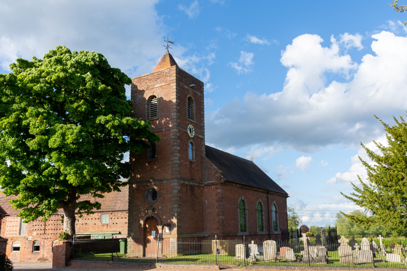

Georgian architecture was unpopular in the 19th Century, consequently the Victorian restorers often drastically altered the character of the buildings. Also, chancels were often extended or rebuilt after the High-Church revival to reflect the increased emphasis on the 'correct' administration of the sacraments.
Bishop Percy
Thomas Percy was born 13th April 1729 in Bridgnorth. He became Bishop of Dromore, but his greatest contribution is considered to be his Reliques of Ancient English Poetry, published in 1765. Wikipedia
1757 AD
In 1757 John Fletcher was ordained as deacon (6 March 1757) and priest (13 March 1757) in the Church of England, after preaching his first sermon at Atcham having being appointed curate to the Rev. Rowland Chambre in the parish of Madeley, Shropshire. Fletcher was of French Huguenot stock, and became one of Methodism's first great theologians. John Wesley had chosen Fletcher to lead the Methodist movement upon Wesley's passing, but Fletcher died prior to Wesley.
Industrial Revolution
1760 saw the start of the Industrial Revolution.
1761 AD (16th March)
John Wesley preached his first sermon in Shrewsbury on March 16th 1761 at 1 Fish Street. Wesley was an English cleric, theologian, and evangelist who was a leader of a revival movement within the Church of England known as Methodism. The societies he founded became the dominant form of the independent Methodist movement that continues to this day.

Iron Bridge
In 1779 the Iron Bridge is built.
1783 AD (21st April)
Reginald Heber is born, he served as rector of Hodnet from 1807 to 1823.
Wikipedia
Attingham Park
In 1785 Attingham Park is built.
Thomas Telford
Telford became Surveyor of Public Works in Shropshire in 1787.
Telford was responsible for designing two churches in Shropshire - Madeley and Bridgnorth. Bridgnorth is unusual in that it is aligned north-south to provide a better aesthetic from the street.


Church Collapse
On 9th July 1788 St Chad's Church, Shrewsbury collapsed.
The Greek Revival (c. 1790 - 1836)
The Greek Revival was championed in England by two young architects following a visit to Athens (then part of the Ottoman empire) for the study of Greek architecture. The enthusiasm for Greek style architecture was quite short lived and was soon replaced for renewed interest in the Gothic.
A small number of churches were build during this period in Shropshire, the most notable ones being All Saints, Wellington, St Chad, Shrewsbury, St Mary Magdalene, Bridgnorth and St Michael, Madeley (the former two by James Stuart, one of the young architects who visited Athens, and the latter two by Thomas Telford). Other churches built during this period were: Malinslee, Frodesley, Trefonen, Hopton Wafers, Shrewsbury (St Michael), Woore, Wrockwardine Wood, Tilstock and Whitchurch (St Catherine).


Charles Darwin Baptism
Charles Darwin is baptised at St Chads church on 15th November 1809.
1817 AD
Thomas Rickman's influential book, An Attempt to Discriminate the Styles of English Architecture, was first published in 1817, establishing the chronological classifications (Norman, Early English, Decorated, Perpendicular) still used today for English Gothic architecture, making it a cornerstone of the Gothic Revival. The classifications in the book are (the dates should be treated with caution):
- Romanesque or Norman 1066-1200
- Gothic Early English 1200-1300
- Decorated 1300-1350
- Perpendicular 1350-1550
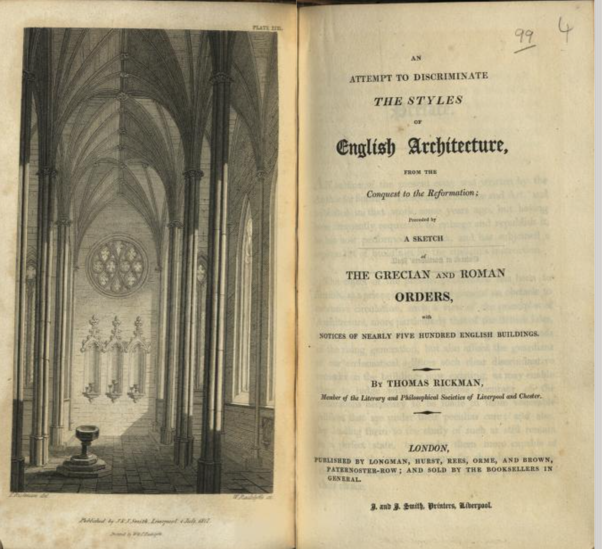
An Attempt to Discriminate the Styles of English Architecture
1818 AD (30th May)
The Church Building Act 1818 is given royal assent. The 1818 act supplied a grant of money and established the Church Building Commission to direct its use. The First Parliamentary Grant for churches amounted to £1 million.
1824 AD (24th June)
The Church Building Act 1824 is given royal assent. The 1824 act made a further grant of money of £500,000.
The Gothic Revival
The Gothic Revival was actually underway before Queen Victoria's reign, the first church to be built under this movement was St Alkmund, Shrewsbury (the church was demolished and rebuilt, but the existing tower and spire retained). Only two other churches were build in Shropshire in the 19th Century prior to the Victorian era, one is now closed and the other is St George, Pontesbury (the tower and nave were rebuilt in the Early English style following the collapse of the original tower).

In the early 19th Century the Church was at a low ebb, there was social unrest and dissent, brought on the Napoleonic Wars and the industrialisation that was happening at the time. The Methodists moved away from the Church of England and established their own organisation. As a result in 1818, the Church founded the Church Building Society and in the same year Parliament passed the Church Building Act. This provided significant money for new churches to be built. At the same time, architects were looking back at medieval Gothic architecture, and under Augustus Pugin, a revolution in this style was established.
1828 AD (9th May)
The Sacramental Test Act 1828 is given royal assent. The act repealed the requirement for public office holders to receive communion in the Church of England as a qualification. Passed in the United Kingdom, the act replaced this test with a declaration that an office holder would not "injure or weaken the Church of England". It abolished the long-standing Test and Corporation Acts of the 1660s, which had historically restricted access to public roles to those who were members of the Anglican Church.
1829 AD (13th April)
The Catholic Emancipation Act 1829 is given royal assent. The Catholic Emancipation Act of 1829, also known as the Roman Catholic Relief Act 1829, was a British law that granted Roman Catholics the right to sit in Parliament and hold public office, allowing them to become MPs, vote, and enter most senior government positions. The act, passed in 1829 after a long campaign, was a major milestone for religious freedom but also included restrictions, such as Roman Catholic priests being barred from the House of Commons
8. Victorian Britain (1837 AD to 1901 AD)
Catholics and Nonconformists are given greater freedoms...a significant amount of church restoration and building is undertaken to provide for growing populations in the cities and other areas driven by the industrial revolution...
The Church of England was predominant at the start of the 19th Century, however, by the end of the Victorian era the Church of England was increasingly only one part of a vibrant and often competitive religious culture, with non-Anglican Protestant denominations enjoying a new prominence. The beliefs and practices at the time were by no means uniform. At one extreme were the Evangelicals, who focused on the Gospel teachings rather than ritual, and emphasised preaching and Bible study. At the other, High Churchmen revived rituals, images, incense and vestments not seen in England since the Reformation.
Restrictions on Nonconformists
By the middle of the 19th Century, Nonconformists comprised about half of church attendees in England, and gradually the legal discrimination that had been established against them was removed. Legal restrictions on Roman Catholics were also largely removed. The number of Catholics grew in Great Britain due to conversions and immigration from Ireland. Legislation in the 1820s had removed some of the barriers that had excluded Christians outside the Church of England – such as Catholics and Methodists – from most public offices and degrees at Oxford or Cambridge.
Pressure for further change was encouraged when the 1851 census revealed that out of a population of nearly 18 million, only 5.2 million attended Church of England services, with 4.9 million attending other Christian places of worship. The rise of non-Anglican Protestant denominations – including Methodists, Baptists and Quakers – is particularly striking: between them they represented nearly half the worshipping nation. This blow to the Church of England led to pressure for further reforms, culminating in an 1871 Act of Parliament that abolished all religious requirements for attendance at universities.
Victorian Crisis of Faith
Secularism (the principle that public life and state institutions should be neutral regarding religion, separating religious and state affairs) and doubts about the accuracy of the Old Testament grew among people with higher levels of education. Northern English and Scottish academics tended to be more religiously conservative, whilst agnosticism and even atheism (though its promotion was illegal) gained appeal among academics in the south. Historians refer to a 'Victorian Crisis of Faith', a period when religious views had to readjust to accommodate new scientific knowledge and criticism of the Bible.
The 19th Century was also the first time in England that a substantial number of public figures openly declared that they had no religious beliefs.
Study of the scriptures as historical texts, and scientific advances such as Charles Darwin’s theory of evolution, made it more difficult for many educated people to accept the literal truth of the Bible. Some intellectuals and writers rejected the teachings of Christianity altogether. Others, such as the poet Alfred Tennyson, clung to their faith, ‘believing where we cannot prove’.
New Churches and Parishes
The 19th Century saw the greatest amount of church repair / restoration and new church building since the Middle Ages.
At the beginning of the Century the difficulty of creating new parishes – a process that until 1843 required an Act of Parliament – meant that the Church was poorly represented in England’s new manufacturing cities. The government had begun to remedy this, as in 1818 it had voted £1 million to be spent on new churches, which was followed by another £500,000 in 1824, thus producing a surge in church building / restoration. The enthusiasm for building or restoring churches continued in Victoria’s reign, galvanised by the ‘High Church’ Oxford Movement - between 1851 and 1875, 2,438 churches were built or rebuilt. One result of these changes was a major increase in the number of Church of England clergymen, from 14,500 in 1841 to 24,000 in 1875.
Early-Victorian Church Building
As a result of the Church Building Act, there was extensive church building in Shropshire on a scale not seen since the 12th Century. Many architects followed the revival inmedieval Gothic architecture.
Between 1830 and 1849, 33 churches were built, mostly in the (relatively plain) Early English style, a few in the neo-Norman (emulates works of the 11th and 12th Century Romanesque in Britain and Norman France) style (Grinshill, All Saints, 1839-1840 is a good example of this) and a few in the disappearing Classical style. The churches were mostly by local architects, the most prolific of these was Edward Haycock snr, who was responsible for about 13 churches, the best of which are Cressage (Christ Church, 1841) and Dorrington (St Edward, 1845). Arguably the finest church of the 1840s is Broseley (All Saints, 1845), which, unusually for this time, is built in the Perpendicular style.


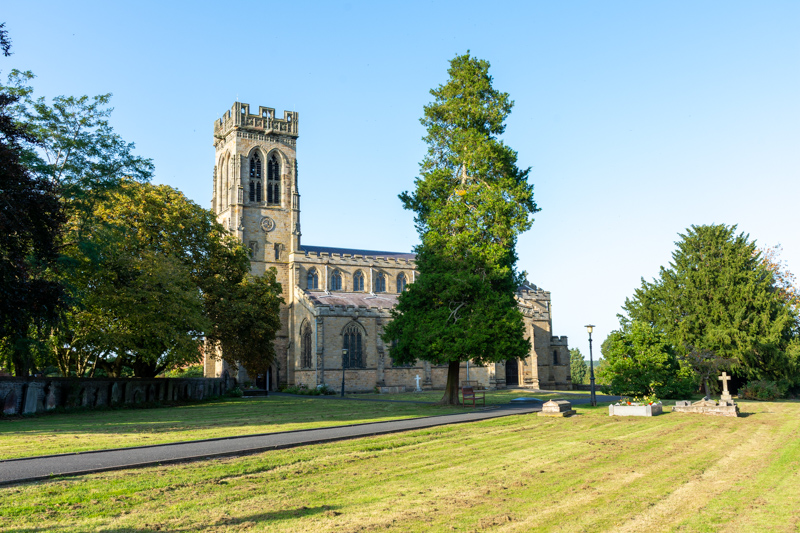
Organ
Organs were introduced to English churches as early as the 10th Century, with a notable, massive instrument documented at Winchester Cathedral during that period. While early examples existed in monasteries and cathedrals, they became firmly established in English parish churches following the Reformation, particularly growing in popularity in the 18th and 19th Centuries.
Shropshire churches contain organs by some of the most well know makers. The organ at St Gregory, Morville is by George Holdich (dated circa 1854-1864) and is almost in its original form. Holdich's greatest achievement was the new organ for Lichfield Cathedral in 1861.
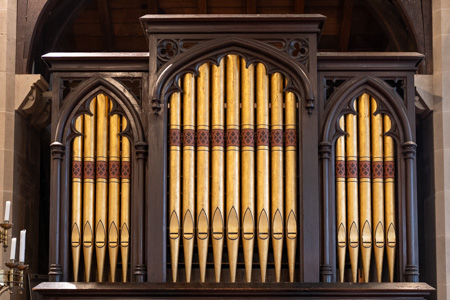
St Gregory, Morville
1842 AD
General Rowland Hill, 1st Viscount Hill (1772–1842), the Shropshire-born hero of the Napoleonic Wars and Waterloo, is buried at St Mary Magdalene Church in Hadnall, near Shrewsbury, Shropshire. He lived at nearby Hardwick Grange and requested a simple burial in his local church.
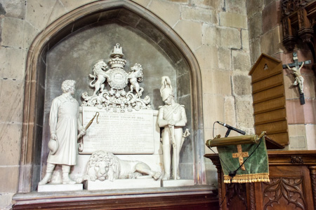
St Mary Magdalene, Hadnall
1843 AD (28th July)
The New Parishes Act 1843 is passed by Parliament - its purpose was to allow the creation of new ecclesiastical districts for the spiritual care of populous parishes in England. The act empowered the Ecclesiastical Commission for England to create these districts which could then become new parishes once a church was built and consecrated. The act also established provisions for the endowment of these new parishes and defined the roles of the minister and church wardens.
1851 AD
Shrewsbury Cathedral is commissioned.
Shrewsbury Cathedral
Mid-Victorian Church Building
In the mid-Victorian era (c. 1850 to 1879), church design in Shropshire caught up with the more ambitious designs of the Decorated style already established and being used in London and elsewhere. During this time, 44 churches were built in Shropshire, of which 26 were in the Decorated style, most of the rest were in the Early English style (which was passing out of fashion) and just 2 were in the Perpendicular style. Many more of Shropshire's churches in the mid-Victorian era were by architects with national practices. Some churches of note are: Sir George Gilbert Scott's church at Welshampton (St Michael and All Angels, 1860s), George Edmund Street's church at St George's (considered to be the outstanding church of the mid-19th Century), George Edmund Street's church at Withington (St John the Baptist, 1874) and Sir Arthur Blomfield's church at Jackfield (St Mary, 1863). Several regional architects created churches of note also, one example being Edward Haycock jnr's church at Meole Brace (Holy Trinity, 1867 to 1868).

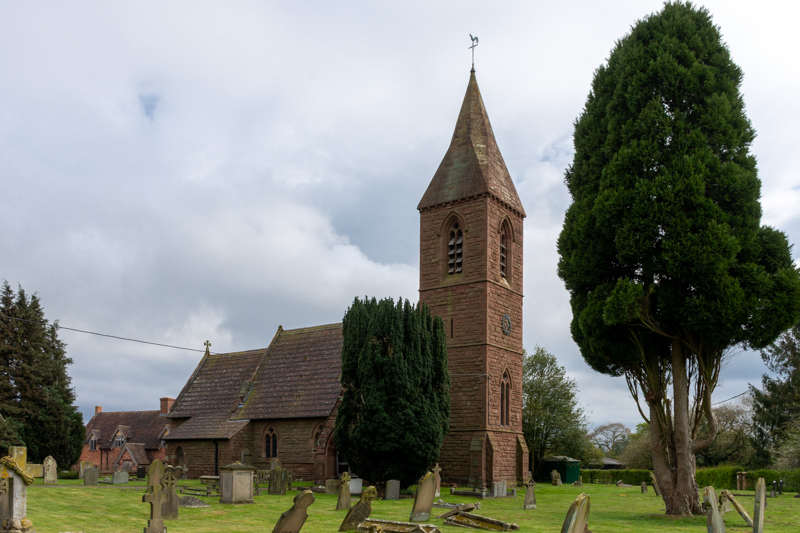


The Origin of Species
Charles Darwin publishes the Origin of Species on 24th November 1859.
1865 AD
Rev E Donald Carr vicar of Woolstaston publishes A Night in the Snow.
Gutenberg Project - eBook of A Night in the Snow
1866 AD
Charles Kempe opens his studio in London - Kempe was designer and manufacturer of stained glass, his studios produced over 4,000 windows some of which are in some of Shropshire's churches.
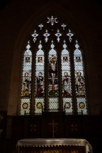
St Peter, Chelmarsh
Wikipedia
Little medieval stained glass survives as it was largely destroyed by the iconoclasts. But the Victorians created many new windows.
1867 AD to 1868 AD
Meole Brace church houses one of the best sets of stained glass by Morris and Co in the country. There are windows by Burne-Jones, Maddox Brown and Morris himseld. There are also two windows in a different style by Kempe. Morris and Co windows feature in other Shropshire churches such as Newport, Church Aston, and Alberbury.

Holy Trinity, Meole Brace
1871 AD
The Universities Tests Act 1871 was an act of the Parliament of the United Kingdom. It abolished religious "Tests" and allowed Roman Catholics, non-conformists and non-Christians to take up professorships, fellowships, studentships and other lay offices at the universities of Oxford, Cambridge and Durham.
1874 AD (17th June)
Sir Stephen Glynne dies, he is principally remembered as an assiduous antiquary and student of British church architecture and as a result creating the Church Notes for Shropshire.

1876 AD (4th April)
The archdeaconry of Shropshire became the archdeaconry of Ludlow.
Archdeacon of Ludlow
The Archdeacon of Ludlow is a senior ecclesiastical officer within the Diocese of Hereford. Prior to 1876 the post was known by its previous title of Archdeacon of Shropshire or alternatively as the Archdeacon of Salop in the Diocese Hereford.
Archdeacon of Salop
The Archdeacon of Salop is a senior ecclesiastical officer in the Church of England Diocese of Lichfield.
1877 AD
Peplow (chapel of the epiphany) church was the first Victorian church in Shropshire to break with the Gothic tradition. It was designed by Richard Norman Shaw (considered to be among the greatest of British architects).

Chapel of the Epiphany, Peplow
Late-Victorian Church Building
Church building in Shropshire slowed down in the last 20 years of the Victorian era; the last to be built in Shropshire in the 19th Century was All Saints, Richard's Castle (Batchcott). Although this church is Gothic, it does not adhere to any particular medieval period, there are elements of the Decorated and Perpendicular styles in this church.

1882 AD (20th June)
Margaret Rope (20th June 1882 to 6th December 1953, born in Shrewsbury) was a stained glass artist in the Arts and Crafts movement. Although christened into the Anglican Church, she converted to Roman Catholicism in 1899 and later became a nun. Her stained glass was exclusively for churches, nearly all Roman Catholic. The Shrewsbury Cathedral has seven of her windows, including her first major commission (the west window).
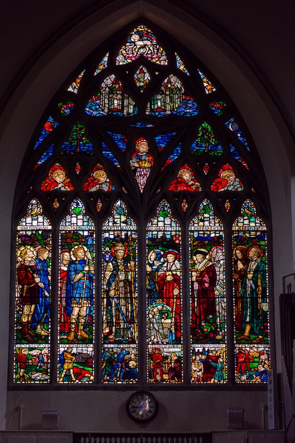
Shrewsbury Cathedral
1885 AD
The English Revised version of the Bible is published.
1888 AD (24th December)
An Act to make further provision for the Nomination of Bishops Suffragans.
The Suffragans Nomination Act 1888 made it lawful to create suffragan sees named for other towns.
1888 AD (24th February)
Sir Lovelace Tomlinson Stamer is consecrated the Bishop of Shrewsbury in 1888 (at St Paul's cathedral). The Right Reverend Sir Lovelace Tomlinson Stamer, 3rd Baronet, VD (18 October 1829 – 29 October 1908) was the first Anglican Bishop of Shrewsbury in the modern era. He retired due to illness in 1905, from which time the post was again in abeyance until 1940. Previously the position had been in abeyance since 1561 following the death of the previous incumbent, Lewis Thomas.
Wikipedia
Reredos
==TBD==

St John the Baptist, Ruyton-XI-Towns
1894 AD
An Architectural Account of the Churches of Shropshire by D. H. S. Cranage was first published between 1894 and 1912 by Hobson & Co. of Wellington, Shropshire. The work was published in multiple parts, with some individual volumes dated 1900, 1901, and the complete set finishing in 1912.
[[5. Shropshire by the Very Rev D.H.S. Cranage.pdf]]
Historic Building and Places - Shropshire by the Very Rev D.H.S. Cranage

1896 AD
A E Houseman publishes 'A Shropshire Lad' - Hughley Steeple is one of the poems.

St John the Baptist, Hughley
1899 AD
The Victoria County History project is founded, it is a national project to write the authoritative local history of every English place.
Victoria County History - Shropshire
British History Online
A History of the County of Shropshire: Volume 2 (covers the religious houses of the county).
British History Online
Victorian Restoration
At the end of the Georgian era, £1.5m had approved for new church builds and church restoration / repair. The new churches built with this funding were known as Commissioner's Churches - in some cases the cost of the church was fully funded, in other cases a grant was provided and the balance raised locally. The Commissioner's Churches in Shropshire are:
- All Saints, Trefonen (1820)
- St George, Frankwell, Shrewsbury (1829-1831)
- Holy Trinity, Wrockwardine Wood (1832-1833)
- St Luke, Ironbridge (1836-1837)
- Christ Church, Wellington (1838-1839)
- St Luke, Little Dawley (1845)
- Holy Trinity, Coalbrookdale (1853-1854)

St George, Frankwell
Wikipedia
Post reformation Neglect and Puritanism
From the time of the English Reformation onwards, apart from necessary repairs so that buildings might remain in use, and the addition of occasional internal commemorative adornments, English churches and cathedrals were subjected to little building work and only piecemeal restoration. This situation lasted for about 250 years with the fabric of many churches and cathedrals suffering from neglect.
In addition, ever since the mid-17th Century Puritan reforms, which were typified by a minimum of ritual and decoration and by an unambiguous emphasis on preaching, there had been an ongoing removal of any emotion or colour from English religious services as a means of distancing itself from what was seen as the excesses of Catholicism.
Gothic Revival and Medievalism Interest
But towards the end of the 18th Century the burgeoning Gothic Revival and interest in medievalism encouraged people to seek more interest in their religious services. The popularity of the Gothic Revival was seen by Church officials as a way to reverse the decline in church attendance, and thereby start to reassert the Church's power, prosperity and influence.
Poor Maintenance and Insufficient Capacity
By the 19th Century, many church buildings were poorly maintained, also, there was a shortage of churches in some areas of increasing population and cities caused by the Industrial Revolution. Both the Cambridge Camden Society and the Oxford Movement advocated a return to a more medieval attitude to churchgoing (a change which was embraced by the Church of England as it saw it as a means of reversing the decline in church attendance).
To cater for the need for new churches in areas of increasing population, between 1818 and 1824 the Government had granted £1.5 million for building new churches. Known as Commissioners' churches, most of them cost only £4,000 to £5,000 each to build, but dissatisfaction with their indifferent design and cheap construction provoked a strong reaction.
Persuaded by the Cambridge Camden Society that Decorated Gothic was the only correct style, and by the Oxford Movement's theories concerning the nature of worship, a spate of "restoration" was soon under way.
Restoration to the Decorated Style
For the existing churches, the principle was to "restore" a church to how it might have looked during the Decorated style of architecture which existed between 1260 and 1360, and many famous architects such as George Gilbert Scott and Ewan Christian enthusiastically accepted commissions for restorations. It is estimated that around 80% of all Church of England churches were affected in some way, varying from minor changes to complete demolition and rebuilding.
Influential people like John Ruskin and William Morris were opposed to such large-scale restoration, and their activities eventually led to the formation of societies dedicated to building preservation, such as the Society for the Protection of Ancient Buildings. In retrospect the period of Victorian restoration has been viewed in a generally unfavourable light, though it did result in the rediscovery of some long-lost features and some churches that would otherwise have fallen into disrepair were saved.
A total of 3,765 new and rebuilt churches were consecrated in the forty years up to 1875, with the most active decade being the 1860s in which there were more than 1,000 such consecrations. Over 7,000 parish churches in England and Wales – which is nearly 80% of all of them – were restored in some way between 1840 and 1875.
Little Retention of Original Material
The retention of original material (carving, woodwork, etc.) tended to be of little importance to the early restorers: appearance was all, and much good old work was discarded to be replaced by modern replacement in the chosen style. Different architects had different degrees of sympathy with original material, and as the century progressed greater care was generally taken; this was at least partly as a result of the increasingly louder voices that were raised in opposition.
Famous architects such as George Gilbert Scott, Ewan Christian, William Butterfield and George Edmund Street became enthusiastic "restorers" and the wave of restoration spread across the country so that by 1875 something like 80% of all churches in England had been affected in some way.
Opposition to the Approach of Restoration
There were opponents. The Archaeological Society was founded in 1845 by antiquarians anxious to bring the love of old buildings to a wider audience. A later vociferous opponent was William Morris who, in the 1880s, started the Society for the Protection of Ancient Buildings (SPAB) in 1877 when he heard of the proposed restoration of Tewkesbury Abbey by Scott.
Despite his opposition, though, it is known that Morris profited greatly by his firm's provision of stained glass to many restoration projects, and it has been noted that his criticism only started after his firm was securely established as a supplier to these projects. But after 1880, in line with SPAB principles, the firm refused to accept stained glass commissions for historic ecclesiastical buildings.
Further opposition came from evangelical Protestants, who believed that "ornamental carved work, decorative painting, encaustic tiles, and stained glass were foolish vanities which lead the heart astray", and from others who were concerned about the cost: "For the cost of one stone church with a groined roof, or even an open timbered roof, two might be built in brick with plaster ceilings; and who could dare to say that worship in the plainer building would be less devout or sincere than that which was offered in the other?"
Not all Catholics were in favour either: late in his life Cardinal Wiseman made it clear that his preference was for Renaissance art, as might be expected of a religious order of Italian origin.
Post-Victorian Perspective
From a post-19th Century perspective the process of Victorian restoration has often been viewed unfavourably, with terms such as "ruthless", "insensitive" and "heavy-handed" being commonly used to describe the work done.
However, not all restoration work was purely negative: a side effect of a number of restorations was the rediscovery of long-lost features, for instance Anglo-Saxon carving that had been incorporated into Norman foundations, or wall-paintings that had been whitewashed over, as at St Albans Cathedral. It is also true to say that had they not been restored many churches would have fallen into disrepair.
9. Modern Britain (1901 AD onwards)
The Church of England experiences decline...and the consecration of the first female bishop...
The Church of England experienced a decline in the 20th Century, marked by falling membership, church attendance, and clergy numbers, especially after 1970. This decline is attributed to factors like secularization, the social and cultural changes following the World Wars, and a loss of relevance in modern society, which have led to fewer people identifying with or attending the church.
20th Century Church Building
Church building in Shropshire continued in the 20th Century, but at a much reduced rate. Throughout the Century, designs became contemporary and modern.
The first churches to be built after the Victorian era were St Michael, All Stretton (1902) and All Saints, Little Stretton (1903).


Little Nell Grave
Charles Dickens knew Tong and in his story The Old Curiosity Shop, it is thought the village where Nell Trent dies was based on Tong in Shropshire.
The popularity of the novel brought many visitors to Tong and the church.
In 1910 the verger at Tong created a false entry in the parish register to state that Nell Gwyn (in error) was buried at Tong.
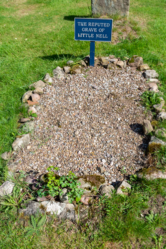
1919 AD (23rd December)
The Church of England Assembly (Powers) Act 1919 is given royal assent. This act enables the Church of England to submit primary legislation called measures, for passage by Parliament. Measures have the same force and effect as acts of Parliament. The power to pass measures was originally granted to the Church Assembly.
Wikipedia
1940 AD (25th January)
Eric Knightley Chetwode Hamilton KCVO (1890 – 21 May 1962) is appointed Bishop suffragan of Shrewsbury in 1940 (the post had been abeyance since 1905). He was consecrated a bishop on the feast of the Conversion of Paul (25 January) 1940, by Cosmo Lang, Archbishop of Canterbury, at Westminster Abbey.
Wikipedia
1958 AD
Sir Nikolaus Pevsner first publishes the Buildings of England (Shropshire volume).

He famously remarked that the great attraction of Shropshire is that it does not attract "too many" people.
1969 AD (25th July)
The Synodical Government Measure 1969 is given royal assent, it is a Church of England measure passed by the National Assembly of the Church of England replacing the National Assembly with the General Synod of the Church of England.
Wikipedia
1974 AD (12th December)
Church of England (Worship and Doctrine) Measure 1974 is given royal assent.
The Church of England (Worship and Doctrine) Measure 1974 gave the General Synod the power to reform the liturgy of the Church of England, repealing the Act of Uniformity 1548.
1981 AD (23rd September)
Stanley Mark Wood is consecrated as the first suffragan Bishop of Ludlow (the Suffragans Nomination Act 1888), and the only suffragan bishop in the diocese of Hereford.
Wikipedia
1984 AD
The graveyard of St Chad's in Shrewsbury is used for the 1984 film of A Christmas Carol.
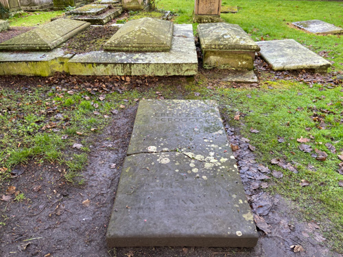
St Chad, Shrewsbury
2004 AD (27th October)
The book Shropshire Churches and Their Treasures (by John Leonard) is first published.

2006 AD (25th August)
On 25th August 2006 it was reported by the BBC that Hodnet church was damaged by treasure seekers following the trail in Da Vinci Code book.
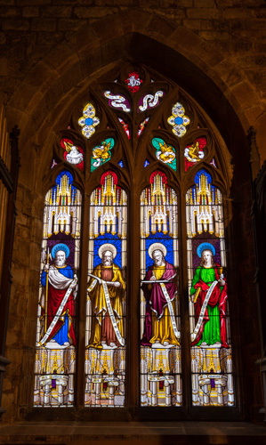
St Luke, Hodnet
BBC
2015 AD (26th January)
Libby Lane is consecrated as the first female bishop.
Wikipedia
2016/2017 AD
In 2016/2017 an archaeological dig took place at St John's, Shrewsbury. The dig discovered that the church was originally much larger and of Saxon origin. Also, a post was found which was carbon dated to 2033BC. Remains had also been found near the church when an earlier housing estate was built in the 1960’s, these included Bronze Age barrows, cursus and pits for standing stones. More wooden posts were found showing that the church stands in the middle of a Bronze Age (or possibly Neolithic) ritual enclosure. It has therefore been a place of worship for 4,000 years and is a Christianised pagan site.
Shrewsbury Orthodox Church

St John, Shrewsbury
2021 AD
The 2021 census reported that in Shropshire 55.5% of the population were Christian, compared with 46.3% in England. Also, 37.0% reported no religion, compared with 36.7% in England.
Shropshire County Council
2023 AD (2nd February)
Paul Richard Thomas is consecrated as the first suffragan Bishop of Oswestry (the Suffragans Nomination Act 1888), in the diocese of Lichfield.
Wikipedia
2025 AD (29th June)
The final service was held at Priorslee church on 29th June 2025. The church is now closed to the public and is inaccessible - it was noted that the "the years have taken their toll on the church building" with a reported £1m needed for repairs.
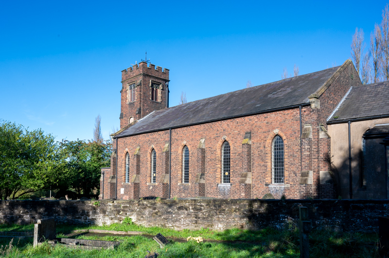
St Peter, Prioslee
2025 AD
Worfield church is used as a filming location for Murder before Evensong.
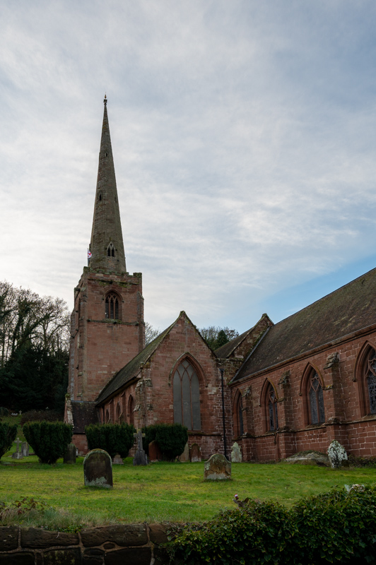
St Peter, Worfield
2026 (28th January)
Dame Sarah Mullally is the first female Archbishop of Canterbury, confirmed in a January 2026 ceremony at St Paul's Cathedral.
Reference Material
General
Some general references.
Anglicanism
Anglicanism is a Western Christian tradition which developed from the practices, liturgy, and identity of the Church of England following the Ennglish Reformation, in the context of the Protestant Reformation in Europe.
Anglo-Saxons
The Anglo-Saxons (who trace their origins to Germanic settlers) became one of the most important cultural groups in Britain by the 5th century. The Anglo-Saxon period in Britain is considered to have started by about 450 and ended in 1066, with the Norman Conquest.
The Bible
The Bible is a collection of religious texts that are central to Christianity and Judaism. The Bible is an anthology (a compilation of texts of a variety of forms) originally written in Hebrew (with some parts in Aramaic) and Koine Greek. The texts include instructions, stories, poetry, prophecies, and other genres. The Old Testament is the original Hebrew Bible, the sacred scriptures of the Jewish faith, written at different times between about 1200 and 165 BC. The New Testament books were written by Christians in the first century AD. Significant translations of the Bible in English include:
1382 Wycliffe Bible
1526 Tyndale Bible
1535 Coverdale Bible
1539 The Great Bible
1568 The Bishop's Bible
1611 King James Version
1885 English Revised Version
The Book of Common Prayer
The Book of Common Prayer is the title of a number of related prayer books used in the Anglican Communion and by other Christian churches historically related to Anglicanism. The first prayer book, published in 1549 in the reign of King Edward VI of England, was a product of the English Reformation following the break with Rome.
1549 The first prayer book is published in the reign of King Edward VI, created by Thomas Crammer (Archbishop of Canterbury).
1552 A more reformed revision of the prayer was created by Thomas Crammer (Archbishop of Canterbury).
1559 Queen Elizabeth I's first Parliament authorised the 1559 prayer book (which effectively re-introduced the 1552 prayer book following the restoration of Catholic worship under Queen Mary I).
1604 King James I ordered some further changes, the most significant being the addition to the Catechism of a section on the Sacraments.
1662 Another revision of the prayer book is published following the English Civil War (when the prayer book was once again abolished) - this edition remains of the official prayer book of the Church of England.
Celtic Christianity
The Celtic areas of Britain are: Cornwall, Wales, Scotland, Ireland.
Chantry
A chantry was a religious endowment in medieval England, established to support a priest who would say daily prayers and Masses for the soul of the founder and the souls of the faithful dead. This could be a dedicated chapel within a church, a separate building, or simply an altar set aside for this purpose, often adorned with a monument. The origins of the chantry coincide with the rapid expansion of regular monasteries in the 11th Century.
The Crusades
The Crusades were a series of religious wars, primarily fought between the 11th and 13th centuries, where Western Christians aimed to reclaim the Holy Land from Muslim control. Initiated by the papacy, these military campaigns were driven by religious zeal, as well as political and economic motives like expanding trade routes and consolidating power. The most significant conflict was for control of Jerusalem, a city holy to Christians, Jews, and Muslims.
Christians in England, like in other parts of Europe, felt a duty to reclaim holy sites in the Holy Land from Muslim control.
Participation was often seen as a way to atone for sins and earn spiritual merit or salvation.
Wikipedia
Episcopel See
An Episcopel See is the area of a bishop's ecclesiastical jurisdiction.
Episcopacy is the governance of the church by Bishops.
Evangelicalism
A movement that emphasizes evangelism, or the preaching and spreading of the Christian gospel.
Gospel
Gospel originally meant the Christian message ("the gospel"), but in the second century AD the term euangélion (Koine Greek meaning 'good news', from which the English word originated as a calque) came to be used also for the books in which the message was reported. In this sense a gospel can be defined as a loose-knit, episodic narrative of the words and deeds of Jesus, culminating in his trial and death, and concluding with various reports of his post-resurrection appearances.
[[Gospel.pdf]] : Wikipedia
The Heptarchy
The Heptarchy was the name for the division of Anglo-Saxon England between the sixth and eighth centuries into petty kingdoms, conventionally the seven kingdoms of East Anglia, Essex, Kent, Mercia, Northumbria, Sussex, and Wessex.
Low Church and High
Low church and high church are terms used to describe contrasting styles within certain Christian traditions, particularly Anglicanism, with "high church" emphasizing ritual, tradition, and sacraments, while "low church" prioritizes preaching, personal piety, and a more simplified liturgy. High church practices often resemble those of Roman Catholicism, such as ornate liturgies, while low church services are typically less formal and more similar to Protestant evangelical traditions.
Nicene Creed
The Nicene Creed is a foundational statement of Christian belief, affirming one God in three persons (Father, Son, Holy Spirit), detailing Jesus's divinity, incarnation, crucifixion, resurrection, and future return, and acknowledging one Church, baptism, and hope in the resurrection, originating from the Councils of Nicaea (325 AD) and Constantinople (381 AD) to define orthodoxy against Arianism.
Nonconformist Protestantism
Nonconformists are Protestant Christians who do not "conform" to the governance and usages of the established church.
Use of the term Nonconformist in England and Wales was precipitated by the Restoration of the Stuart monarchy in 1660, when the Act of Uniformity 1662 renewed opposition to reforms within the established church.
Puritans
The Puritans were English Protestants in the 16th and 17th centuries who sought to rid the Church of England of what they considered to be Roman Catholic practices, maintaining that the Church of England had not been fully reformed and should become more Protestant. Puritans were dissatisfied with the limited extent of the English Reformation and with the Church of England's toleration of certain practices associated with the Catholic Church.
Puritanism played a significant role in English history, especially in the Protectorate in Great Britain.
Reference Material (Shropshire Specific)
Some general references.
Monastic Houses in Shropshire